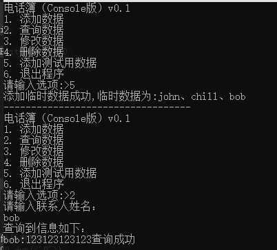

<!DOCTYPE html>
<html lang="en">
<head>
    <meta charset="utf-8">
    
    <title>汇编作业--电话簿 | kn0sky&#39;wiki</title>
    
    
        <meta name="keywords" content="kn0sky">
    
    <meta name="viewport" content="width=device-width, initial-scale=1, maximum-scale=1">
    <meta name="description" content="汇编作业–电话簿花了不少时间，不过总算完成这项作业了，虽然不是很完美，但也基本符合要求了，完成过程跟大家分享分享， 个人博客：https:&#x2F;&#x2F;kn0sky.com 12345678910111213141516171819202122232425262728293031323334353637383940414243444546474849505152**项目名称：**汇编语言电话本**项目背景：">
<meta property="og:type" content="article">
<meta property="og:title" content="汇编作业--电话簿">
<meta property="og:url" content="http://kn0sky.com/wiki/%E5%AD%A6%E4%B9%A0%E7%AC%94%E8%AE%B0/%E6%B1%87%E7%BC%96%E5%9F%BA%E7%A1%80%E5%AD%A6%E4%B9%A0%E7%AC%94%E8%AE%B0/%E6%B1%87%E7%BC%96%E4%BD%9C%E4%B8%9A--%E7%94%B5%E8%AF%9D%E7%B0%BF/index.html">
<meta property="og:site_name" content="kn0sky&#39;wiki">
<meta property="og:description" content="汇编作业–电话簿花了不少时间，不过总算完成这项作业了，虽然不是很完美，但也基本符合要求了，完成过程跟大家分享分享， 个人博客：https:&#x2F;&#x2F;kn0sky.com 12345678910111213141516171819202122232425262728293031323334353637383940414243444546474849505152**项目名称：**汇编语言电话本**项目背景：">
<meta property="og:locale" content="en_US">
<meta property="og:image" content="http://kn0sky.com/wiki/%E5%AD%A6%E4%B9%A0%E7%AC%94%E8%AE%B0/%E6%B1%87%E7%BC%96%E5%9F%BA%E7%A1%80%E5%AD%A6%E4%B9%A0%E7%AC%94%E8%AE%B0/%E6%B1%87%E7%BC%96%E4%BD%9C%E4%B8%9A--%E7%94%B5%E8%AF%9D%E7%B0%BF/image-20200514230142334.png">
<meta property="og:image" content="http://kn0sky.com/wiki/%E5%AD%A6%E4%B9%A0%E7%AC%94%E8%AE%B0/%E6%B1%87%E7%BC%96%E5%9F%BA%E7%A1%80%E5%AD%A6%E4%B9%A0%E7%AC%94%E8%AE%B0/%E6%B1%87%E7%BC%96%E4%BD%9C%E4%B8%9A--%E7%94%B5%E8%AF%9D%E7%B0%BF/image-20200514230655653.png">
<meta property="og:image" content="http://kn0sky.com/wiki/%E5%AD%A6%E4%B9%A0%E7%AC%94%E8%AE%B0/%E6%B1%87%E7%BC%96%E5%9F%BA%E7%A1%80%E5%AD%A6%E4%B9%A0%E7%AC%94%E8%AE%B0/%E6%B1%87%E7%BC%96%E4%BD%9C%E4%B8%9A--%E7%94%B5%E8%AF%9D%E7%B0%BF/image-20200514230749576.png">
<meta property="article:published_time" content="2020-05-14T15:27:19.000Z">
<meta property="article:modified_time" content="2020-05-14T16:49:34.000Z">
<meta property="article:author" content="kn0sky">
<meta property="article:tag" content="kn0sky">
<meta name="twitter:card" content="summary">
<meta name="twitter:image" content="http://kn0sky.com/wiki/%E5%AD%A6%E4%B9%A0%E7%AC%94%E8%AE%B0/%E6%B1%87%E7%BC%96%E5%9F%BA%E7%A1%80%E5%AD%A6%E4%B9%A0%E7%AC%94%E8%AE%B0/%E6%B1%87%E7%BC%96%E4%BD%9C%E4%B8%9A--%E7%94%B5%E8%AF%9D%E7%B0%BF/image-20200514230142334.png">
    

    
        <link rel="alternate" href="/atom.xml" title="kn0sky&#39;wiki" type="application/atom+xml">
    

    
        <link rel="icon" href="/favicon.ico">
    

    
<link rel="stylesheet" href="/libs/font-awesome/css/font-awesome.min.css">

    
<link rel="stylesheet" href="/libs/open-sans/styles.css">

    
<link rel="stylesheet" href="/libs/source-code-pro/styles.css">


    
<link rel="stylesheet" href="/css/style.css">

    
<script src="/libs/jquery/2.1.3/jquery.min.js"></script>

    
<script src="/libs/jquery/plugins/cookie/1.4.1/jquery.cookie.js"></script>

    
    
        
<link rel="stylesheet" href="/libs/lightgallery/css/lightgallery.min.css">

    
    
        
<link rel="stylesheet" href="/libs/justified-gallery/justifiedGallery.min.css">

    
    
    
    


    
        <script async src="//busuanzi.ibruce.info/busuanzi/2.3/busuanzi.pure.mini.js"></script>
    
<meta name="generator" content="Hexo 4.2.0"></head>
</html>
<body>
    <div id="container">
        <header id="header">
    <div id="header-main" class="header-inner">
        <div class="outer">
            <a href="/" id="logo">
                <i class="logo"></i>
                <span class="site-title">kn0sky&#39;wiki</span>
            </a>
            <nav id="main-nav">
                
                    <a class="main-nav-link" href="/">首页</a>
                
                    <a class="main-nav-link" href="/archives">归档</a>
                
                    <a class="main-nav-link" href="/categories">分类</a>
                
                    <a class="main-nav-link" href="/tags">标签</a>
                
                    <a class="main-nav-link" href="/about">关于</a>
                
            </nav>
            
            <div id="search-form-wrap">

    <form class="search-form">
        <input type="text" class="ins-search-input search-form-input" placeholder="Search">
        <button type="submit" class="search-form-submit"></button>
    </form>
    <div class="ins-search">
    <div class="ins-search-mask"></div>
    <div class="ins-search-container">
        <div class="ins-input-wrapper">
            <input type="text" class="ins-search-input" placeholder="Type something...">
            <span class="ins-close ins-selectable"><i class="fa fa-times-circle"></i></span>
        </div>
        <div class="ins-section-wrapper">
            <div class="ins-section-container"></div>
        </div>
    </div>
</div>
<script>
(function (window) {
    var INSIGHT_CONFIG = {
        TRANSLATION: {
            POSTS: 'Posts',
            PAGES: 'Pages',
            CATEGORIES: 'Categories',
            TAGS: 'Tags',
            UNTITLED: '(Untitled)',
        },
        ROOT_URL: '/',
        CONTENT_URL: '/content.json',
    };
    window.INSIGHT_CONFIG = INSIGHT_CONFIG;
})(window);
</script>

<script src="/js/insight.js"></script>


</div>
        </div>
    </div>
    <div id="main-nav-mobile" class="header-sub header-inner">
        <table class="menu outer">
            <tr>
                
                    <td><a class="main-nav-link" href="/">首页</a></td>
                
                    <td><a class="main-nav-link" href="/archives">归档</a></td>
                
                    <td><a class="main-nav-link" href="/categories">分类</a></td>
                
                    <td><a class="main-nav-link" href="/tags">标签</a></td>
                
                    <td><a class="main-nav-link" href="/about">关于</a></td>
                
                <td>
                    
    <div class="search-form">
        <input type="text" class="ins-search-input search-form-input" placeholder="Search">
    </div>

                </td>
            </tr>
        </table>
    </div>
</header>

        <div class="outer">
            
            
                <aside id="sidebar">
   
        
    <div class="widget-wrap" id="categories">
        <h3 class="widget-title">
            <span>categories</span>
            &nbsp;
            <a id="allExpand" href="#">
                <i class="fa fa-angle-double-down fa-2x"></i>
            </a>
        </h3>
        
        
        
         <ul class="unstyled" id="tree"> 
                    <li class="directory">
                        <a href="#" data-role="directory">
                            <i class="fa fa-folder"></i>
                            &nbsp;
                            备忘笔记
                        </a>
                         <ul class="unstyled" id="tree">  <li class="file"><a href="/wiki/%E5%A4%87%E5%BF%98%E7%AC%94%E8%AE%B0/%E5%B8%B8%E7%94%A8%E5%B7%A5%E5%85%B7%E6%B1%87%E6%80%BB/">常用工具备忘录</a></li>  </ul> 
                    </li> 
                    
                    <li class="directory open">
                        <a href="#" data-role="directory">
                            <i class="fa fa-folder-open"></i>
                            &nbsp;
                            学习笔记
                        </a>
                         <ul class="unstyled" id="tree"> 
                    <li class="directory">
                        <a href="#" data-role="directory">
                            <i class="fa fa-folder"></i>
                            &nbsp;
                            51单片机学习笔记
                        </a>
                         <ul class="unstyled" id="tree">  <li class="file"><a href="/wiki/%E5%AD%A6%E4%B9%A0%E7%AC%94%E8%AE%B0/51%E5%8D%95%E7%89%87%E6%9C%BA%E5%AD%A6%E4%B9%A0%E7%AC%94%E8%AE%B0/51%E5%8D%95%E7%89%87%E6%9C%BA%E5%85%A5%E9%97%A802--%E6%95%B0%E7%A0%81%E7%AE%A1/">51单片机入门02--数码管</a></li>  <li class="file"><a href="/wiki/%E5%AD%A6%E4%B9%A0%E7%AC%94%E8%AE%B0/51%E5%8D%95%E7%89%87%E6%9C%BA%E5%AD%A6%E4%B9%A0%E7%AC%94%E8%AE%B0/51%E5%8D%95%E7%89%87%E6%9C%BA%E5%85%A5%E9%97%A803--%E6%8C%89%E9%94%AE/">51单片机入门03--按键</a></li>  </ul> 
                    </li> 
                    
                    <li class="directory">
                        <a href="#" data-role="directory">
                            <i class="fa fa-folder"></i>
                            &nbsp;
                            前端入门学习笔记
                        </a>
                         <ul class="unstyled" id="tree">  <li class="file"><a href="/wiki/%E5%AD%A6%E4%B9%A0%E7%AC%94%E8%AE%B0/%E5%89%8D%E7%AB%AF%E5%85%A5%E9%97%A8%E5%AD%A6%E4%B9%A0%E7%AC%94%E8%AE%B0/%E5%89%8D%E7%AB%AF%E5%85%A5%E9%97%A801--HTML&CSS%E5%9F%BA%E7%A1%80/">前端入门01--HTML和CSS基础</a></li>  </ul> 
                    </li> 
                    
                    <li class="directory">
                        <a href="#" data-role="directory">
                            <i class="fa fa-folder"></i>
                            &nbsp;
                            半导体物理学习笔记
                        </a>
                         <ul class="unstyled" id="tree">  <li class="file"><a href="/wiki/%E5%AD%A6%E4%B9%A0%E7%AC%94%E8%AE%B0/%E5%8D%8A%E5%AF%BC%E4%BD%93%E7%89%A9%E7%90%86%E5%AD%A6%E4%B9%A0%E7%AC%94%E8%AE%B0/%E5%8D%8A%E5%AF%BC%E4%BD%93%E7%89%A9%E7%90%8601--%E8%83%BD%E5%B8%A6%E7%90%86%E8%AE%BA/">半导体物理01--能带理论</a></li>  </ul> 
                    </li> 
                    
                    <li class="directory open">
                        <a href="#" data-role="directory">
                            <i class="fa fa-folder-open"></i>
                            &nbsp;
                            汇编基础学习笔记
                        </a>
                         <ul class="unstyled" id="tree">  <li class="file"><a href="/wiki/%E5%AD%A6%E4%B9%A0%E7%AC%94%E8%AE%B0/%E6%B1%87%E7%BC%96%E5%9F%BA%E7%A1%80%E5%AD%A6%E4%B9%A0%E7%AC%94%E8%AE%B0/%E6%B1%87%E7%BC%96%E5%9F%BA%E7%A1%8001--%E5%9F%BA%E7%A1%80%E6%A6%82%E5%BF%B5/">汇编基础01：基础概念</a></li>  <li class="file"><a href="/wiki/%E5%AD%A6%E4%B9%A0%E7%AC%94%E8%AE%B0/%E6%B1%87%E7%BC%96%E5%9F%BA%E7%A1%80%E5%AD%A6%E4%B9%A0%E7%AC%94%E8%AE%B0/%E6%B1%87%E7%BC%96%E5%9F%BA%E7%A1%8002--%E7%AC%AC%E4%B8%80%E4%B8%AA%E7%A8%8B%E5%BA%8F/">汇编基础02：第一个程序</a></li>  <li class="file"><a href="/wiki/%E5%AD%A6%E4%B9%A0%E7%AC%94%E8%AE%B0/%E6%B1%87%E7%BC%96%E5%9F%BA%E7%A1%80%E5%AD%A6%E4%B9%A0%E7%AC%94%E8%AE%B0/%E6%B1%87%E7%BC%96%E5%9F%BA%E7%A1%8003--%E6%95%B0%E5%AD%A6%E8%BF%90%E7%AE%97&%E9%80%BB%E8%BE%91%E8%BF%90%E7%AE%97/">汇编基础03：数学运算&逻辑运算</a></li>  <li class="file"><a href="/wiki/%E5%AD%A6%E4%B9%A0%E7%AC%94%E8%AE%B0/%E6%B1%87%E7%BC%96%E5%9F%BA%E7%A1%80%E5%AD%A6%E4%B9%A0%E7%AC%94%E8%AE%B0/%E6%B1%87%E7%BC%96%E5%9F%BA%E7%A1%8004--%E5%BE%AA%E7%8E%AF/">汇编基础04：循环</a></li>  <li class="file"><a href="/wiki/%E5%AD%A6%E4%B9%A0%E7%AC%94%E8%AE%B0/%E6%B1%87%E7%BC%96%E5%9F%BA%E7%A1%80%E5%AD%A6%E4%B9%A0%E7%AC%94%E8%AE%B0/%E6%B1%87%E7%BC%96%E5%9F%BA%E7%A1%8005--%E5%A0%86%E6%A0%88/">汇编基础05：堆栈</a></li>  <li class="file"><a href="/wiki/%E5%AD%A6%E4%B9%A0%E7%AC%94%E8%AE%B0/%E6%B1%87%E7%BC%96%E5%9F%BA%E7%A1%80%E5%AD%A6%E4%B9%A0%E7%AC%94%E8%AE%B0/%E6%B1%87%E7%BC%96%E5%9F%BA%E7%A1%8006--%E6%95%B0%E6%8D%AE%E4%BC%A0%E9%80%81%E6%8C%87%E4%BB%A4/">汇编基础06：数据传送指令</a></li>  <li class="file"><a href="/wiki/%E5%AD%A6%E4%B9%A0%E7%AC%94%E8%AE%B0/%E6%B1%87%E7%BC%96%E5%9F%BA%E7%A1%80%E5%AD%A6%E4%B9%A0%E7%AC%94%E8%AE%B0/%E6%B1%87%E7%BC%96%E5%9F%BA%E7%A1%8007--%E6%AF%94%E8%BE%83%E6%8C%87%E4%BB%A4/">汇编基础07：比较指令</a></li>  <li class="file"><a href="/wiki/%E5%AD%A6%E4%B9%A0%E7%AC%94%E8%AE%B0/%E6%B1%87%E7%BC%96%E5%9F%BA%E7%A1%80%E5%AD%A6%E4%B9%A0%E7%AC%94%E8%AE%B0/%E6%B1%87%E7%BC%96%E5%9F%BA%E7%A1%8008--JCC%E6%8C%87%E4%BB%A4/">汇编基础08： JCC 转移指令</a></li>  <li class="file"><a href="/wiki/%E5%AD%A6%E4%B9%A0%E7%AC%94%E8%AE%B0/%E6%B1%87%E7%BC%96%E5%9F%BA%E7%A1%80%E5%AD%A6%E4%B9%A0%E7%AC%94%E8%AE%B0/%E6%B1%87%E7%BC%96%E5%9F%BA%E7%A1%8009--%E4%BC%A0%E9%80%81%E6%8C%87%E4%BB%A4/">汇编基础09--传送指令</a></li>  <li class="file"><a href="/wiki/%E5%AD%A6%E4%B9%A0%E7%AC%94%E8%AE%B0/%E6%B1%87%E7%BC%96%E5%9F%BA%E7%A1%80%E5%AD%A6%E4%B9%A0%E7%AC%94%E8%AE%B0/%E6%B1%87%E7%BC%96%E5%9F%BA%E7%A1%8010--%E4%BD%BF%E7%94%A8%E5%87%BD%E6%95%B0/">汇编基础10--使用函数</a></li>  <li class="file"><a href="/wiki/%E5%AD%A6%E4%B9%A0%E7%AC%94%E8%AE%B0/%E6%B1%87%E7%BC%96%E5%9F%BA%E7%A1%80%E5%AD%A6%E4%B9%A0%E7%AC%94%E8%AE%B0/%E6%B1%87%E7%BC%96%E5%9F%BA%E7%A1%8012--%E6%95%B0%E7%BB%84%E5%92%8C%E7%BB%93%E6%9E%84%E4%BD%93/">汇编基础12--数组和结构体</a></li>  <li class="file"><a href="/wiki/%E5%AD%A6%E4%B9%A0%E7%AC%94%E8%AE%B0/%E6%B1%87%E7%BC%96%E5%9F%BA%E7%A1%80%E5%AD%A6%E4%B9%A0%E7%AC%94%E8%AE%B0/%E6%B1%87%E7%BC%96%E5%9F%BA%E7%A1%8011--win32%E6%B1%87%E7%BC%96/">汇编基础11--win32汇编</a></li>  <li class="file active"><a href="/wiki/%E5%AD%A6%E4%B9%A0%E7%AC%94%E8%AE%B0/%E6%B1%87%E7%BC%96%E5%9F%BA%E7%A1%80%E5%AD%A6%E4%B9%A0%E7%AC%94%E8%AE%B0/%E6%B1%87%E7%BC%96%E4%BD%9C%E4%B8%9A--%E7%94%B5%E8%AF%9D%E7%B0%BF/">汇编作业--电话簿</a></li>  </ul> 
                    </li> 
                    
                    <li class="directory">
                        <a href="#" data-role="directory">
                            <i class="fa fa-folder"></i>
                            &nbsp;
                            王道计组书学习笔记
                        </a>
                         <ul class="unstyled" id="tree">  <li class="file"><a href="/wiki/%E5%AD%A6%E4%B9%A0%E7%AC%94%E8%AE%B0/%E7%8E%8B%E9%81%93%E8%AE%A1%E7%BB%84%E4%B9%A6%E5%AD%A6%E4%B9%A0%E7%AC%94%E8%AE%B0/%E7%8E%8B%E9%81%93%E8%AE%A1%E7%BB%84%E7%AC%94%E8%AE%B001--%E8%AE%A1%E7%AE%97%E6%9C%BA%E7%B3%BB%E7%BB%9F%E6%A6%82%E8%BF%B0/">王道计组笔记01--计算机系统概述</a></li>  </ul> 
                    </li> 
                     </ul> 
                    </li> 
                    
                    <li class="directory">
                        <a href="#" data-role="directory">
                            <i class="fa fa-folder"></i>
                            &nbsp;
                            折腾笔记
                        </a>
                         <ul class="unstyled" id="tree"> 
                    <li class="directory">
                        <a href="#" data-role="directory">
                            <i class="fa fa-folder"></i>
                            &nbsp;
                            博客搭建
                        </a>
                         <ul class="unstyled" id="tree">  <li class="file"><a href="/wiki/%E6%8A%98%E8%85%BE%E7%AC%94%E8%AE%B0/%E5%8D%9A%E5%AE%A2%E6%90%AD%E5%BB%BA/%E4%BD%BF%E7%94%A8hexo%E6%90%AD%E5%BB%BAwiki/">使用hexo搭建个人wiki</a></li>  <li class="file"><a href="/wiki/%E6%8A%98%E8%85%BE%E7%AC%94%E8%AE%B0/%E5%8D%9A%E5%AE%A2%E6%90%AD%E5%BB%BA/%E5%80%9F%E5%8A%A9%E4%BA%91%E6%9C%8D%E5%8A%A1%E5%99%A8%E5%AE%9E%E7%8E%B0hexo%E5%85%A8%E8%87%AA%E5%8A%A8%E9%83%A8%E7%BD%B2/">借助云服务器实现hexo全自动部署</a></li>  <li class="file"><a href="/wiki/%E6%8A%98%E8%85%BE%E7%AC%94%E8%AE%B0/%E5%8D%9A%E5%AE%A2%E6%90%AD%E5%BB%BA/hexo%E8%81%94%E5%8A%A8Typora/">hexo联动Typora</a></li>  </ul> 
                    </li> 
                    
                    <li class="directory">
                        <a href="#" data-role="directory">
                            <i class="fa fa-folder"></i>
                            &nbsp;
                            手机连接电脑
                        </a>
                         <ul class="unstyled" id="tree">  <li class="file"><a href="/wiki/%E6%8A%98%E8%85%BE%E7%AC%94%E8%AE%B0/%E6%89%8B%E6%9C%BA%E8%BF%9E%E6%8E%A5%E7%94%B5%E8%84%91/%E4%BD%BF%E7%94%A8%E6%89%8B%E6%9C%BA%E6%89%A9%E5%B1%95%E7%94%B5%E8%84%91%E5%B1%8F%E5%B9%95/">使用手机扩展电脑屏幕</a></li>  <li class="file"><a href="/wiki/%E6%8A%98%E8%85%BE%E7%AC%94%E8%AE%B0/%E6%89%8B%E6%9C%BA%E8%BF%9E%E6%8E%A5%E7%94%B5%E8%84%91/%E4%BD%BF%E7%94%A8%E7%94%B5%E8%84%91%E6%8E%A7%E5%88%B6%E6%89%8B%E6%9C%BA/">使用电脑控制手机</a></li>  </ul> 
                    </li> 
                     </ul> 
                    </li> 
                    
                    <li class="directory">
                        <a href="#" data-role="directory">
                            <i class="fa fa-folder"></i>
                            &nbsp;
                            概念笔记
                        </a>
                         <ul class="unstyled" id="tree">  <li class="file"><a href="/wiki/%E6%A6%82%E5%BF%B5%E7%AC%94%E8%AE%B0/%E5%AF%84%E5%AD%98%E5%99%A8%E9%80%BB%E8%BE%91%E7%BB%93%E6%9E%84/">寄存器逻辑结构</a></li>  <li class="file"><a href="/wiki/%E6%A6%82%E5%BF%B5%E7%AC%94%E8%AE%B0/%E5%86%85%E5%AD%98/">内存</a></li>  </ul> 
                    </li> 
                     <li class="file"><a href="/wiki/test/">test</a></li>  </ul> 
    </div>
    <script>
        $(document).ready(function() {
            var iconFolderOpenClass  = 'fa-folder-open';
            var iconFolderCloseClass = 'fa-folder';
            var iconAllExpandClass = 'fa-angle-double-down';
            var iconAllPackClass = 'fa-angle-double-up';
            // Handle directory-tree expansion:
            // 左键单独展开目录
            $(document).on('click', '#categories a[data-role="directory"]', function (event) {
                event.preventDefault();

                var icon = $(this).children('.fa');
                var expanded = icon.hasClass(iconFolderOpenClass);
                var subtree = $(this).siblings('ul');
                icon.removeClass(iconFolderOpenClass).removeClass(iconFolderCloseClass);
                if (expanded) {
                    if (typeof subtree != 'undefined') {
                        subtree.slideUp({ duration: 100 });
                    }
                    icon.addClass(iconFolderCloseClass);
                } else {
                    if (typeof subtree != 'undefined') {
                        subtree.slideDown({ duration: 100 });
                    }
                    icon.addClass(iconFolderOpenClass);
                }
            });
            // 右键展开下属所有目录
            $('#categories a[data-role="directory"]').bind("contextmenu", function(event){
                event.preventDefault();
                
                var icon = $(this).children('.fa');
                var expanded = icon.hasClass(iconFolderOpenClass);
                var listNode = $(this).siblings('ul');
                var subtrees = $.merge(listNode.find('li ul'), listNode);
                var icons = $.merge(listNode.find('.fa'), icon);
                icons.removeClass(iconFolderOpenClass).removeClass(iconFolderCloseClass);
                if(expanded) {
                    subtrees.slideUp({ duration: 100 });
                    icons.addClass(iconFolderCloseClass);
                } else {
                    subtrees.slideDown({ duration: 100 });
                    icons.addClass(iconFolderOpenClass);
                }
            })
            // 展开关闭所有目录按钮
            $(document).on('click', '#allExpand', function (event) {
                event.preventDefault();
                
                var icon = $(this).children('.fa');
                var expanded = icon.hasClass(iconAllExpandClass);
                icon.removeClass(iconAllExpandClass).removeClass(iconAllPackClass);
                if(expanded) {
                    $('#sidebar .fa.fa-folder').removeClass('fa-folder').addClass('fa-folder-open')
                    $('#categories li ul').slideDown({ duration: 100 });
                    icon.addClass(iconAllPackClass);
                } else {
                    $('#sidebar .fa.fa-folder-open').removeClass('fa-folder-open').addClass('fa-folder')
                    $('#categories li ul').slideUp({ duration: 100 });
                    icon.addClass(iconAllExpandClass);
                }
            });  
        });
    </script>

    
    <div id="toTop" class="fa fa-angle-up"></div>
</aside>
            
            <section id="main"><article id="post-学习笔记/汇编基础学习笔记/汇编作业--电话簿" class="article article-type-post" itemscope itemprop="blogPost">
    <div class="article-inner">
        
        
            <header class="article-header">
                
                    <div class="article-meta">
                        
    <div class="article-category">
    	<i class="fa fa-folder"></i>
        <a class="article-category-link" href="/categories/%E5%AD%A6%E4%B9%A0%E7%AC%94%E8%AE%B0/">学习笔记</a><i class="fa fa-angle-right"></i><a class="article-category-link" href="/categories/%E5%AD%A6%E4%B9%A0%E7%AC%94%E8%AE%B0/%E6%B1%87%E7%BC%96%E5%9F%BA%E7%A1%80%E5%AD%A6%E4%B9%A0%E7%AC%94%E8%AE%B0/">汇编基础学习笔记</a>
    </div>

                        
                        
    <div class="article-date">
        <i class="fa fa-calendar"></i>
        <a href="/wiki/%E5%AD%A6%E4%B9%A0%E7%AC%94%E8%AE%B0/%E6%B1%87%E7%BC%96%E5%9F%BA%E7%A1%80%E5%AD%A6%E4%B9%A0%E7%AC%94%E8%AE%B0/%E6%B1%87%E7%BC%96%E4%BD%9C%E4%B8%9A--%E7%94%B5%E8%AF%9D%E7%B0%BF/">
            <time datetime="2020-05-14T15:27:19.000Z" itemprop="datePublished">2020-05-14</time>
        </a>
    </div>


                        
                            <i class="fa fa-bar-chart"></i>
                            <span id="busuanzi_container_site_pv"><span id="busuanzi_value_page_pv"></span></span>    
                        
                        
                    </div>
                
                
    
        <h1 class="article-title" itemprop="name">
            汇编作业--电话簿
        </h1>
    

            </header>
        
        
        <div class="article-entry" itemprop="articleBody">
        
        
            
                <div id="toc" class="toc-article">
                <strong class="toc-title">Catalogue</strong>
                    <ol class="toc"><li class="toc-item toc-level-1"><a class="toc-link" href="#汇编作业–电话簿"><span class="toc-number">1.</span> <span class="toc-text">汇编作业–电话簿</span></a><ol class="toc-child"><li class="toc-item toc-level-2"><a class="toc-link" href="#实现基本功能"><span class="toc-number">1.1.</span> <span class="toc-text">实现基本功能</span></a><ol class="toc-child"><li class="toc-item toc-level-3"><a class="toc-link" href="#数据结构"><span class="toc-number">1.1.1.</span> <span class="toc-text">数据结构</span></a><ol class="toc-child"><li class="toc-item toc-level-4"><a class="toc-link" href="#字符串"><span class="toc-number">1.1.1.1.</span> <span class="toc-text">字符串</span></a></li><li class="toc-item toc-level-4"><a class="toc-link" href="#数组"><span class="toc-number">1.1.1.2.</span> <span class="toc-text">数组</span></a></li><li class="toc-item toc-level-4"><a class="toc-link" href="#数据结构-1"><span class="toc-number">1.1.1.3.</span> <span class="toc-text">数据结构</span></a></li></ol></li></ol></li><li class="toc-item toc-level-2"><a class="toc-link" href="#实现增加功能"><span class="toc-number">1.2.</span> <span class="toc-text">实现增加功能</span></a><ol class="toc-child"><li class="toc-item toc-level-3"><a class="toc-link" href="#输入功能"><span class="toc-number">1.2.1.</span> <span class="toc-text">输入功能</span></a></li><li class="toc-item toc-level-3"><a class="toc-link" href="#添加数据函数"><span class="toc-number">1.2.2.</span> <span class="toc-text">添加数据函数</span></a></li></ol></li><li class="toc-item toc-level-2"><a class="toc-link" href="#实现查询功能"><span class="toc-number">1.3.</span> <span class="toc-text">实现查询功能</span></a></li><li class="toc-item toc-level-2"><a class="toc-link" href="#增加一个菜单功能"><span class="toc-number">1.4.</span> <span class="toc-text">增加一个菜单功能</span></a></li><li class="toc-item toc-level-2"><a class="toc-link" href="#实现修改-删除功能"><span class="toc-number">1.5.</span> <span class="toc-text">实现修改&#x2F;删除功能</span></a></li><li class="toc-item toc-level-2"><a class="toc-link" href="#效果图"><span class="toc-number">1.6.</span> <span class="toc-text">效果图</span></a></li><li class="toc-item toc-level-2"><a class="toc-link" href="#完整代码"><span class="toc-number">1.7.</span> <span class="toc-text">完整代码</span></a></li><li class="toc-item toc-level-2"><a class="toc-link" href="#遇到的问题及其解决方案"><span class="toc-number">1.8.</span> <span class="toc-text">遇到的问题及其解决方案</span></a><ol class="toc-child"><li class="toc-item toc-level-4"><a class="toc-link" href="#0X01-找不到msvcrt-inv文件"><span class="toc-number">1.8.0.1.</span> <span class="toc-text">0X01 找不到msvcrt.inv文件</span></a></li></ol></li></ol></li><li class="toc-item toc-level-2"><a class="toc-link" href="#参考资料"><span class="toc-number">1.9.</span> <span class="toc-text">参考资料</span></a></li></ol>
                </div>
            
        
        
            <h1 id="汇编作业–电话簿"><a href="#汇编作业–电话簿" class="headerlink" title="汇编作业–电话簿"></a>汇编作业–电话簿</h1><p>花了不少时间，不过总算完成这项作业了，虽然不是很完美，但也基本符合要求了，完成过程跟大家分享分享，</p>
<p>个人博客：<a href="https://kn0sky.com">https://kn0sky.com</a></p>
<figure class="highlight markdown"><table><tr><td class="gutter"><pre><span class="line">1</span><br><span class="line">2</span><br><span class="line">3</span><br><span class="line">4</span><br><span class="line">5</span><br><span class="line">6</span><br><span class="line">7</span><br><span class="line">8</span><br><span class="line">9</span><br><span class="line">10</span><br><span class="line">11</span><br><span class="line">12</span><br><span class="line">13</span><br><span class="line">14</span><br><span class="line">15</span><br><span class="line">16</span><br><span class="line">17</span><br><span class="line">18</span><br><span class="line">19</span><br><span class="line">20</span><br><span class="line">21</span><br><span class="line">22</span><br><span class="line">23</span><br><span class="line">24</span><br><span class="line">25</span><br><span class="line">26</span><br><span class="line">27</span><br><span class="line">28</span><br><span class="line">29</span><br><span class="line">30</span><br><span class="line">31</span><br><span class="line">32</span><br><span class="line">33</span><br><span class="line">34</span><br><span class="line">35</span><br><span class="line">36</span><br><span class="line">37</span><br><span class="line">38</span><br><span class="line">39</span><br><span class="line">40</span><br><span class="line">41</span><br><span class="line">42</span><br><span class="line">43</span><br><span class="line">44</span><br><span class="line">45</span><br><span class="line">46</span><br><span class="line">47</span><br><span class="line">48</span><br><span class="line">49</span><br><span class="line">50</span><br><span class="line">51</span><br><span class="line">52</span><br></pre></td><td class="code"><pre><span class="line"><span class="strong">**项目名称：**</span>汇编语言电话本</span><br><span class="line"></span><br><span class="line"><span class="strong">**项目背景：**</span>基于同学们学习汇编语言后没有练习的问题，特以该项目作为阶段性练习。</span><br><span class="line"></span><br><span class="line"><span class="strong">**项目目的：**</span>熟悉汇编语言编程，练习编程逻辑，熟悉Win32 API调用模式</span><br><span class="line"></span><br><span class="line"><span class="strong">**项目要求：**</span>编写一个具有增删改查功能的电话本，基于控制台。具体要求如下：</span><br><span class="line"></span><br><span class="line"><span class="bullet">1. </span>基本功能：电话本具有姓名与电话号码两项属性，并且使用数据结构作为存储</span><br><span class="line"><span class="bullet">2. </span>增加功能：插入姓名与电话号码到数据结构的最后。</span><br><span class="line"><span class="bullet">3. </span>查询功能：输入姓名，以此作为依据，到数据结构中查找，将找到的信息打印到控制台。</span><br><span class="line"><span class="bullet">4. </span>删除功能：输入姓名或电话号码，以此作为依据，到数据结构中查找，且删除该条信息。</span><br><span class="line"><span class="bullet">5. </span>修改功能：输入姓名或电话号码，以此作为依据，到数据结构中查找，找到后打印信息，要求输入新的姓名或电话，接受后修改原有条目。</span><br><span class="line"></span><br><span class="line"> </span><br><span class="line"><span class="strong">**编写指南：**</span></span><br><span class="line"></span><br><span class="line"><span class="strong">**1.**</span><span class="strong">**数组的编写方式**</span></span><br><span class="line"></span><br><span class="line">TelephoneNumber dd 30 DUP(?)</span><br><span class="line"></span><br><span class="line"> </span><br><span class="line"><span class="strong">**2.**</span><span class="strong">**结构体的编写方式**</span></span><br><span class="line"></span><br><span class="line">Name STRUCT</span><br><span class="line"></span><br><span class="line">具体成员信息</span><br><span class="line"></span><br><span class="line">Name ENDS</span><br><span class="line"></span><br><span class="line"> </span><br><span class="line"><span class="strong">**3.**</span><span class="strong">**控制台相关的API**</span></span><br><span class="line"></span><br><span class="line">GetStdHandle 获得标准输入输出的窗口句柄</span><br><span class="line"></span><br><span class="line">SetConsoleTextAttribute是设置控制台字体颜色和背景色</span><br><span class="line"></span><br><span class="line">CONSOLE<span class="emphasis">_CURSOR_</span>INFO用于存放控制光标信息</span><br><span class="line"></span><br><span class="line">SetConsoleCursorInfo设置光标的信息</span><br><span class="line"></span><br><span class="line">GetConsoleScreenBufferInfo取得控制台屏幕信息</span><br><span class="line"></span><br><span class="line">SetConsoleCursorPosition设置光标位置</span><br><span class="line"></span><br><span class="line">WriteConsoleOutput直接写输入缓冲区</span><br><span class="line"></span><br><span class="line">SetConsoleTitle设置控制台的标题</span><br><span class="line"></span><br><span class="line">ReadConsole 读控制台</span><br><span class="line"></span><br><span class="line">WriteConsole 写控制台</span><br></pre></td></tr></table></figure>

<h2 id="实现基本功能"><a href="#实现基本功能" class="headerlink" title="实现基本功能"></a>实现基本功能</h2><p>首先，根据前面所学的知识不能够完成本项目，目前以本项目为最终目标，将目标分解成小目标逐个击破</p>
<p>第一步———-基本功能：电话本具有姓名与电话号码两项属性，并且使用数据结构作为存储</p>
<h3 id="数据结构"><a href="#数据结构" class="headerlink" title="数据结构"></a>数据结构</h3><p>首先要了解数据结构要怎么弄，我们的数据包括姓名和电话两部分，姓名是字符串，电话是数组，应该先弄清楚这两样东西怎么用</p>
<h4 id="字符串"><a href="#字符串" class="headerlink" title="字符串"></a>字符串</h4><p>定义一个字符串并通过调用消息框输出：</p>
<figure class="highlight plain"><table><tr><td class="gutter"><pre><span class="line">1</span><br><span class="line">2</span><br><span class="line">3</span><br><span class="line">4</span><br><span class="line">5</span><br><span class="line">6</span><br><span class="line">7</span><br><span class="line">8</span><br><span class="line">9</span><br><span class="line">10</span><br><span class="line">11</span><br><span class="line">12</span><br><span class="line">13</span><br><span class="line">14</span><br><span class="line">15</span><br><span class="line">16</span><br><span class="line">17</span><br><span class="line">18</span><br><span class="line">19</span><br><span class="line">20</span><br><span class="line">21</span><br><span class="line">22</span><br><span class="line">23</span><br><span class="line">24</span><br></pre></td><td class="code"><pre><span class="line">.586</span><br><span class="line">.model flat,stdcall</span><br><span class="line">includelib user32.lib</span><br><span class="line">includelib kernel32.lib</span><br><span class="line">ExitProcess PROTO, dwExitCode:DWORD</span><br><span class="line">MessageBoxA PROTO, hWnd:DWORD ,lpText:BYTE ,lpCaption:BYTE ,uType:DWORD</span><br><span class="line"></span><br><span class="line">.data</span><br><span class="line">name1 db &quot;警告&quot; ,0</span><br><span class="line">name2 db &quot;你菜爆了&quot; ,0</span><br><span class="line"></span><br><span class="line">.code</span><br><span class="line">main proc</span><br><span class="line">	push 0</span><br><span class="line">	lea eax ,name1</span><br><span class="line">	push eax</span><br><span class="line">	lea eax ,name2</span><br><span class="line">	push eax</span><br><span class="line">	push 0</span><br><span class="line">	call MessageBoxA</span><br><span class="line">	add esp,16</span><br><span class="line">	call ExitProcess</span><br><span class="line">main ENDP</span><br><span class="line">END main</span><br></pre></td></tr></table></figure>

<p>通过控制台输出：</p>
<figure class="highlight plain"><table><tr><td class="gutter"><pre><span class="line">1</span><br><span class="line">2</span><br><span class="line">3</span><br><span class="line">4</span><br><span class="line">5</span><br><span class="line">6</span><br><span class="line">7</span><br><span class="line">8</span><br><span class="line">9</span><br><span class="line">10</span><br><span class="line">11</span><br><span class="line">12</span><br><span class="line">13</span><br><span class="line">14</span><br><span class="line">15</span><br></pre></td><td class="code"><pre><span class="line">.586</span><br><span class="line">.model flat, stdcall</span><br><span class="line"></span><br><span class="line">include msvcrt.inc</span><br><span class="line">includelib msvcrt.lib</span><br><span class="line"></span><br><span class="line">.data</span><br><span class="line">    szText db &#39;Hello World!&#39;, 0</span><br><span class="line"></span><br><span class="line">.code</span><br><span class="line">main proc</span><br><span class="line">    invoke crt_printf, addr szText;类似于call，但比call方便，可直接在后面跟参数</span><br><span class="line">    mov eax ,eax</span><br><span class="line">main endp</span><br><span class="line">end main</span><br></pre></td></tr></table></figure>

<h4 id="数组"><a href="#数组" class="headerlink" title="数组"></a>数组</h4><p>定义一个数组赋值并输出到控制台：</p>
<figure class="highlight plain"><table><tr><td class="gutter"><pre><span class="line">1</span><br><span class="line">2</span><br><span class="line">3</span><br><span class="line">4</span><br><span class="line">5</span><br><span class="line">6</span><br><span class="line">7</span><br><span class="line">8</span><br><span class="line">9</span><br><span class="line">10</span><br><span class="line">11</span><br><span class="line">12</span><br><span class="line">13</span><br><span class="line">14</span><br><span class="line">15</span><br><span class="line">16</span><br><span class="line">17</span><br><span class="line">18</span><br><span class="line">19</span><br><span class="line">20</span><br><span class="line">21</span><br><span class="line">22</span><br><span class="line">23</span><br><span class="line">24</span><br><span class="line">25</span><br><span class="line">26</span><br></pre></td><td class="code"><pre><span class="line">.386</span><br><span class="line">.model flat, stdcall</span><br><span class="line"></span><br><span class="line">include msvcrt.inc</span><br><span class="line">includelib msvcrt.lib</span><br><span class="line"></span><br><span class="line">.data</span><br><span class="line">;定义数组</span><br><span class="line">user db 20 dup(0)</span><br><span class="line">testext db &quot;hello world!&quot;,0</span><br><span class="line"></span><br><span class="line">.code</span><br><span class="line">main proc</span><br><span class="line">	;给数组赋值</span><br><span class="line">	lea edi ,offset user</span><br><span class="line">	lea esi ,offset testext</span><br><span class="line">    mov ecx,20</span><br><span class="line">	rep movsb</span><br><span class="line">	;打印</span><br><span class="line">	push offset user</span><br><span class="line">	call crt_printf</span><br><span class="line">	</span><br><span class="line">	mov eax ,eax</span><br><span class="line"></span><br><span class="line">main endp</span><br><span class="line">end main</span><br></pre></td></tr></table></figure>

<h4 id="数据结构-1"><a href="#数据结构-1" class="headerlink" title="数据结构"></a>数据结构</h4><p>到这里我们已经会使用字符串和数组了，接下来了解一下如何使用数据结构作为存储。</p>
<p>示例：创建一个结构体，包含两项内容，插入值并输出</p>
<figure class="highlight plain"><table><tr><td class="gutter"><pre><span class="line">1</span><br><span class="line">2</span><br><span class="line">3</span><br><span class="line">4</span><br><span class="line">5</span><br><span class="line">6</span><br><span class="line">7</span><br><span class="line">8</span><br><span class="line">9</span><br><span class="line">10</span><br><span class="line">11</span><br><span class="line">12</span><br><span class="line">13</span><br><span class="line">14</span><br><span class="line">15</span><br><span class="line">16</span><br><span class="line">17</span><br><span class="line">18</span><br><span class="line">19</span><br><span class="line">20</span><br><span class="line">21</span><br><span class="line">22</span><br><span class="line">23</span><br><span class="line">24</span><br><span class="line">25</span><br><span class="line">26</span><br><span class="line">27</span><br><span class="line">28</span><br><span class="line">29</span><br><span class="line">30</span><br><span class="line">31</span><br><span class="line">32</span><br><span class="line">33</span><br><span class="line">34</span><br><span class="line">35</span><br><span class="line">36</span><br><span class="line">37</span><br><span class="line">38</span><br><span class="line">39</span><br><span class="line">40</span><br><span class="line">41</span><br><span class="line">42</span><br><span class="line">43</span><br><span class="line">44</span><br><span class="line">45</span><br></pre></td><td class="code"><pre><span class="line">.386</span><br><span class="line">.model flat, stdcall</span><br><span class="line"></span><br><span class="line">include msvcrt.inc</span><br><span class="line">includelib msvcrt.lib</span><br><span class="line"></span><br><span class="line">.data</span><br><span class="line">;定义结构体</span><br><span class="line">Contact struct</span><br><span class="line">	user db 20 dup(0)</span><br><span class="line">	tel db 20 dup(0)</span><br><span class="line">Contact ends</span><br><span class="line"></span><br><span class="line">person1 Contact &lt;&gt;</span><br><span class="line">person2 Contact &lt;&#39;john&#39;,&#39;12312312312&#39;&gt;</span><br><span class="line"></span><br><span class="line">tsname db &quot;Li Hua&quot;,0</span><br><span class="line">tstel db &quot;12312345678&quot;,0</span><br><span class="line"></span><br><span class="line"></span><br><span class="line">.code</span><br><span class="line">main proc</span><br><span class="line">	;给结构体数组赋值</span><br><span class="line">	lea edi ,offset person1.tel</span><br><span class="line">	lea esi ,offset tstel</span><br><span class="line">	mov ecx ,20</span><br><span class="line">	rep movsb</span><br><span class="line"></span><br><span class="line">	lea edi ,offset person1.user</span><br><span class="line">	lea esi ,offset tsname</span><br><span class="line">	mov ecx ,20</span><br><span class="line">	rep movsb</span><br><span class="line"></span><br><span class="line">	push offset person1.user</span><br><span class="line">	call crt_printf</span><br><span class="line">	add esp ,4</span><br><span class="line"></span><br><span class="line">	push offset person1.tel</span><br><span class="line">	call crt_printf</span><br><span class="line">	add esp ,4</span><br><span class="line"></span><br><span class="line">	mov eax ,eax</span><br><span class="line"></span><br><span class="line">main endp</span><br><span class="line">end main</span><br></pre></td></tr></table></figure>

<p>到此，基本功能已经实现，下一步，实现增加功能</p>
<h2 id="实现增加功能"><a href="#实现增加功能" class="headerlink" title="实现增加功能"></a>实现增加功能</h2><p>增加功能：插入姓名与电话号码到数据结构的最后。</p>
<p>这里要解决两个问题</p>
<ol>
<li>如何输入数据</li>
<li>如何将数据加到数据结构的最后</li>
</ol>
<h3 id="输入功能"><a href="#输入功能" class="headerlink" title="输入功能"></a>输入功能</h3><p>输入一个字符数并输出：</p>
<figure class="highlight plain"><table><tr><td class="gutter"><pre><span class="line">1</span><br><span class="line">2</span><br><span class="line">3</span><br><span class="line">4</span><br><span class="line">5</span><br><span class="line">6</span><br><span class="line">7</span><br><span class="line">8</span><br><span class="line">9</span><br><span class="line">10</span><br><span class="line">11</span><br><span class="line">12</span><br><span class="line">13</span><br><span class="line">14</span><br><span class="line">15</span><br><span class="line">16</span><br><span class="line">17</span><br><span class="line">18</span><br><span class="line">19</span><br><span class="line">20</span><br><span class="line">21</span><br><span class="line">22</span><br><span class="line">23</span><br><span class="line">24</span><br><span class="line">25</span><br></pre></td><td class="code"><pre><span class="line">.586</span><br><span class="line">.model flat ,stdcall</span><br><span class="line"></span><br><span class="line">include msvcrt.inc</span><br><span class="line">includelib msvcrt.lib</span><br><span class="line"></span><br><span class="line">.data</span><br><span class="line">;输入格式</span><br><span class="line">input_format_str db &quot;%s&quot;,0	</span><br><span class="line"></span><br><span class="line">;存放输入的变量</span><br><span class="line">inputstr db 0,0</span><br><span class="line"></span><br><span class="line">.code</span><br><span class="line">main proc</span><br><span class="line">	push offset inputstr</span><br><span class="line">	push offset input_format_str</span><br><span class="line">	call crt_scanf	;输入函数需要两个参数，一个是输入格式，一个用来保存输入的值</span><br><span class="line">	add esp,8</span><br><span class="line"></span><br><span class="line">	invoke crt_printf ,offset inputstr</span><br><span class="line"></span><br><span class="line">	mov eax ,eax</span><br><span class="line">main endp</span><br><span class="line">end main</span><br></pre></td></tr></table></figure>

<h3 id="添加数据函数"><a href="#添加数据函数" class="headerlink" title="添加数据函数"></a>添加数据函数</h3><p>据此，我们可以用一个变量来计数，来计算数组最后一个位置的偏移量，通过上面的方法来实现添加数据。</p>
<p>初步完成添加数据功能函数：</p>
<figure class="highlight plain"><table><tr><td class="gutter"><pre><span class="line">1</span><br><span class="line">2</span><br><span class="line">3</span><br><span class="line">4</span><br><span class="line">5</span><br><span class="line">6</span><br><span class="line">7</span><br><span class="line">8</span><br><span class="line">9</span><br><span class="line">10</span><br><span class="line">11</span><br><span class="line">12</span><br><span class="line">13</span><br><span class="line">14</span><br><span class="line">15</span><br><span class="line">16</span><br><span class="line">17</span><br><span class="line">18</span><br><span class="line">19</span><br><span class="line">20</span><br><span class="line">21</span><br><span class="line">22</span><br><span class="line">23</span><br><span class="line">24</span><br><span class="line">25</span><br><span class="line">26</span><br><span class="line">27</span><br><span class="line">28</span><br><span class="line">29</span><br><span class="line">30</span><br><span class="line">31</span><br><span class="line">32</span><br><span class="line">33</span><br><span class="line">34</span><br><span class="line">35</span><br><span class="line">36</span><br><span class="line">37</span><br><span class="line">38</span><br><span class="line">39</span><br><span class="line">40</span><br><span class="line">41</span><br><span class="line">42</span><br><span class="line">43</span><br><span class="line">44</span><br><span class="line">45</span><br><span class="line">46</span><br><span class="line">47</span><br><span class="line">48</span><br><span class="line">49</span><br><span class="line">50</span><br><span class="line">51</span><br><span class="line">52</span><br><span class="line">53</span><br><span class="line">54</span><br><span class="line">55</span><br><span class="line">56</span><br><span class="line">57</span><br><span class="line">58</span><br><span class="line">59</span><br><span class="line">60</span><br><span class="line">61</span><br><span class="line">62</span><br><span class="line">63</span><br><span class="line">64</span><br><span class="line">65</span><br><span class="line">66</span><br><span class="line">67</span><br><span class="line">68</span><br><span class="line">69</span><br><span class="line">70</span><br><span class="line">71</span><br><span class="line">72</span><br><span class="line">73</span><br><span class="line">74</span><br><span class="line">75</span><br><span class="line">76</span><br><span class="line">77</span><br><span class="line">78</span><br><span class="line">79</span><br><span class="line">80</span><br><span class="line">81</span><br><span class="line">82</span><br><span class="line">83</span><br><span class="line">84</span><br><span class="line">85</span><br></pre></td><td class="code"><pre><span class="line">.data</span><br><span class="line">;结构体存储名字电话</span><br><span class="line">Contact struct</span><br><span class="line">	user db 20 dup(0)</span><br><span class="line">	tel db 20 dup(0)</span><br><span class="line">Contact ends</span><br><span class="line"></span><br><span class="line">;定义一个结构体数组存储所有联系人</span><br><span class="line">ContactList Contact 100 dup(&lt;&#39;0&#39;&gt;)</span><br><span class="line"></span><br><span class="line">;定义一个临时结构用来传送数据</span><br><span class="line">tmpContact Contact &lt;&#39;john&#39;,&#39;123123123123&#39;&gt;</span><br><span class="line"></span><br><span class="line">;输入格式</span><br><span class="line">input_format_str db &quot;%s&quot;,0	</span><br><span class="line"></span><br><span class="line">;存放输入的变量</span><br><span class="line">inputstr db 20 dup(0)</span><br><span class="line"></span><br><span class="line">;现有数据数</span><br><span class="line">count dd 1 dup(0)</span><br><span class="line"></span><br><span class="line">;问候语</span><br><span class="line">input_user_text db &quot;请输入联系人姓名：&quot;,0</span><br><span class="line">input_tel_text db &quot;请输入联系人电话：&quot;,0</span><br><span class="line"></span><br><span class="line"></span><br><span class="line">.code</span><br><span class="line">addContact proc</span><br><span class="line">	;消息提示1：请输入联系人姓名</span><br><span class="line">	push offset input_user_text</span><br><span class="line">	call crt_printf</span><br><span class="line">	add esp,4</span><br><span class="line"></span><br><span class="line">	;输入</span><br><span class="line">	push offset inputstr</span><br><span class="line">	push offset input_format_str</span><br><span class="line">	call crt_scanf</span><br><span class="line">	add esp,8</span><br><span class="line"></span><br><span class="line">	;保存到临时用结构里</span><br><span class="line">	lea esi ,offset inputstr</span><br><span class="line">	lea edi ,offset tmpContact.user</span><br><span class="line">	mov ecx ,20</span><br><span class="line">	rep movsb</span><br><span class="line"></span><br><span class="line">	;----------------------------------------</span><br><span class="line"></span><br><span class="line">	;消息提示2：请输入联系人电话</span><br><span class="line">	push offset input_tel_text</span><br><span class="line">	call crt_printf</span><br><span class="line">	add esp,4</span><br><span class="line"></span><br><span class="line">	;输入</span><br><span class="line">	push offset inputstr</span><br><span class="line">	push offset input_format_str</span><br><span class="line">	call crt_scanf</span><br><span class="line">	add esp,8</span><br><span class="line"></span><br><span class="line">	;保存到临时用结构里</span><br><span class="line">	lea esi ,offset inputstr</span><br><span class="line">	lea edi ,offset tmpContact.tel</span><br><span class="line">	mov ecx ,20</span><br><span class="line">	rep movsb</span><br><span class="line"></span><br><span class="line">	;-----------------------------------------</span><br><span class="line"></span><br><span class="line">	;保存到数据结构的最后</span><br><span class="line">	lea esi ,offset tmpContact</span><br><span class="line">	lea edi ,offset ContactList</span><br><span class="line">	</span><br><span class="line">	;计算偏移,并移动</span><br><span class="line">	mov eax ,sizeof(Contact)</span><br><span class="line">	mov ecx ,count</span><br><span class="line">	imul eax,ecx</span><br><span class="line">	add edi ,eax</span><br><span class="line">	mov ecx ,40</span><br><span class="line">	rep movsb</span><br><span class="line">	</span><br><span class="line">	;总数+1</span><br><span class="line">	inc count</span><br><span class="line"></span><br><span class="line">	;返回</span><br><span class="line">	retn</span><br><span class="line">addContact endp</span><br></pre></td></tr></table></figure>

<h2 id="实现查询功能"><a href="#实现查询功能" class="headerlink" title="实现查询功能"></a>实现查询功能</h2><p>查询功能：输入姓名，以此作为依据，到数据结构中查找，将找到的信息打印到控制台。</p>
<p>这里思路就很简单了，我们把我们的联系人数组遍历一遍即可，ebx来接收要循环的次数，edx显示当前已循环的次数，如果到循环次数了，也就是遍历到联系人总数了，就结束循环跳出</p>
<figure class="highlight plain"><table><tr><td class="gutter"><pre><span class="line">1</span><br><span class="line">2</span><br><span class="line">3</span><br><span class="line">4</span><br><span class="line">5</span><br><span class="line">6</span><br><span class="line">7</span><br><span class="line">8</span><br><span class="line">9</span><br><span class="line">10</span><br><span class="line">11</span><br><span class="line">12</span><br><span class="line">13</span><br><span class="line">14</span><br><span class="line">15</span><br><span class="line">16</span><br><span class="line">17</span><br><span class="line">18</span><br><span class="line">19</span><br><span class="line">20</span><br><span class="line">21</span><br><span class="line">22</span><br><span class="line">23</span><br><span class="line">24</span><br><span class="line">25</span><br><span class="line">26</span><br><span class="line">27</span><br><span class="line">28</span><br><span class="line">29</span><br><span class="line">30</span><br><span class="line">31</span><br><span class="line">32</span><br><span class="line">33</span><br><span class="line">34</span><br><span class="line">35</span><br><span class="line">36</span><br><span class="line">37</span><br><span class="line">38</span><br><span class="line">39</span><br><span class="line">40</span><br><span class="line">41</span><br><span class="line">42</span><br><span class="line">43</span><br></pre></td><td class="code"><pre><span class="line">searchContact proc</span><br><span class="line">	mov edx ,0</span><br><span class="line">	mov ebx ,count</span><br><span class="line">l:</span><br><span class="line">	;判断循环条件</span><br><span class="line">	cmp edx ,ebx</span><br><span class="line">	jz exit;edx&#x3D;&#x3D;ebx的时候退出</span><br><span class="line">	</span><br><span class="line">	;获取数组地址</span><br><span class="line">	lea esi ,offset ContactList</span><br><span class="line">	lea edi ,offset s_test_user	;临时用待查询人姓名</span><br><span class="line">	</span><br><span class="line">	;计算偏移量来选择数组的下一位</span><br><span class="line">	mov eax ,sizeof(Contact)</span><br><span class="line">	imul eax,edx</span><br><span class="line">	add esi ,eax</span><br><span class="line">	</span><br><span class="line">	;串比较</span><br><span class="line">	mov ecx ,20</span><br><span class="line">	repe cmpsb</span><br><span class="line">	</span><br><span class="line">	;比较成功了，跳转到s程序，将查询到的信息打印出来</span><br><span class="line">	jz s</span><br><span class="line">	</span><br><span class="line">	;比较失败了，edx+1，然后继续查询</span><br><span class="line">	inc edx</span><br><span class="line">	jnz l</span><br><span class="line">s:	</span><br><span class="line">	;edx+1，然后ebx，edx入栈出栈</span><br><span class="line">	inc edx</span><br><span class="line">	push edx</span><br><span class="line">	push ebx</span><br><span class="line">	;invoke会改变ebx，edx的内容</span><br><span class="line">	invoke crt_printf ,offset s_test_user</span><br><span class="line">	pop ebx</span><br><span class="line">	pop edx</span><br><span class="line">	;然后无条件跳转回循环中继续下一次查询</span><br><span class="line">	jmp l</span><br><span class="line"></span><br><span class="line">exit:</span><br><span class="line">	retn</span><br><span class="line"></span><br><span class="line">searchContact endp</span><br></pre></td></tr></table></figure>

<h2 id="增加一个菜单功能"><a href="#增加一个菜单功能" class="headerlink" title="增加一个菜单功能"></a>增加一个菜单功能</h2><p>已经实现几个功能了，接下来我们可以新增一下菜单功能，让我们的操作看起来更直接一些</p>
<p>思路很简单，就是接收一个输入的值，如果值等于1就走1选项，以此类推即可,这里给出一个例子</p>
<figure class="highlight plain"><table><tr><td class="gutter"><pre><span class="line">1</span><br><span class="line">2</span><br><span class="line">3</span><br><span class="line">4</span><br><span class="line">5</span><br><span class="line">6</span><br><span class="line">7</span><br><span class="line">8</span><br><span class="line">9</span><br><span class="line">10</span><br><span class="line">11</span><br><span class="line">12</span><br><span class="line">13</span><br><span class="line">14</span><br><span class="line">15</span><br><span class="line">16</span><br><span class="line">17</span><br><span class="line">18</span><br><span class="line">19</span><br><span class="line">20</span><br><span class="line">21</span><br><span class="line">22</span><br><span class="line">23</span><br><span class="line">24</span><br><span class="line">25</span><br><span class="line">26</span><br><span class="line">27</span><br><span class="line">28</span><br><span class="line">29</span><br><span class="line">30</span><br><span class="line">31</span><br><span class="line">32</span><br><span class="line">33</span><br><span class="line">34</span><br><span class="line">35</span><br><span class="line">36</span><br><span class="line">37</span><br><span class="line">38</span><br><span class="line">39</span><br><span class="line">40</span><br><span class="line">41</span><br><span class="line">42</span><br><span class="line">43</span><br><span class="line">44</span><br><span class="line">45</span><br><span class="line">46</span><br><span class="line">47</span><br><span class="line">48</span><br><span class="line">49</span><br><span class="line">50</span><br></pre></td><td class="code"><pre><span class="line">.data</span><br><span class="line">;菜单</span><br><span class="line">bookmenu db &quot;电话簿（Console版）v0.1&quot;,endl,</span><br><span class="line">			&quot;1. 添加数据&quot;,endl,</span><br><span class="line">			&quot;2. 查询数据&quot;,endl,</span><br><span class="line">			&quot;3. 修改数据&quot;,endl,</span><br><span class="line">			&quot;4. 删除数据&quot;,endl,</span><br><span class="line">			&quot;5. 添加测试用数据&quot;,endl,</span><br><span class="line">			&quot;6. 退出程序&quot;,endl,</span><br><span class="line">			&quot;请输入选项:&quot;,0</span><br><span class="line"></span><br><span class="line">choose db 1 dup(0)</span><br><span class="line"></span><br><span class="line">chooselist db &quot; 123456&quot;,0</span><br><span class="line">.code</span><br><span class="line">menu:</span><br><span class="line">	;显示菜单</span><br><span class="line">	push offset bookmenu</span><br><span class="line">	call crt_printf</span><br><span class="line">	add esp ,4</span><br><span class="line"></span><br><span class="line">	;输入选项</span><br><span class="line">	push offset choose</span><br><span class="line">	push offset input_format_str</span><br><span class="line">	call crt_scanf</span><br><span class="line"></span><br><span class="line">	;jcc跳转</span><br><span class="line">	mov ebx ,1</span><br><span class="line">	</span><br><span class="line">	mov esi ,offset chooselist</span><br><span class="line">	mov edi ,offset choose</span><br><span class="line">	add esi ,ebx</span><br><span class="line">	mov ecx ,1</span><br><span class="line">	repe cmpsb</span><br><span class="line">	jz c1</span><br><span class="line">	inc ebx</span><br><span class="line">;此处省略c2--c5</span><br><span class="line">	mov esi ,offset chooselist</span><br><span class="line">	mov edi ,offset choose</span><br><span class="line">	add esi ,ebx</span><br><span class="line">	mov ecx ,1</span><br><span class="line">	repe cmpsb</span><br><span class="line">	jz c6</span><br><span class="line">	jmp menu</span><br><span class="line">c1:</span><br><span class="line">	inc ebx</span><br><span class="line">	call addContact</span><br><span class="line">	jmp menu</span><br><span class="line">c6:</span><br><span class="line">	call ExitProcess</span><br></pre></td></tr></table></figure>

<h2 id="实现修改-删除功能"><a href="#实现修改-删除功能" class="headerlink" title="实现修改/删除功能"></a>实现修改/删除功能</h2><p>这里就讲个思路，方法与前面大同小异</p>
<p>修改/删除功能是在查询功能的基础之上新增的功能，设置一个修改flag=0，如果从菜单选中修改/删除，则flag=1，思路是通过查询函数查到数据之后，检查flag的值，如果flag=1，则进行修改/删除</p>
<p>删除操作其实就是把要删除的那一个部分用后面的内容覆盖掉就行了</p>
<h2 id="效果图"><a href="#效果图" class="headerlink" title="效果图"></a>效果图</h2><p></p>
<p></p>
<p></p>
<h2 id="完整代码"><a href="#完整代码" class="headerlink" title="完整代码"></a>完整代码</h2><figure class="highlight plain"><table><tr><td class="gutter"><pre><span class="line">1</span><br><span class="line">2</span><br><span class="line">3</span><br><span class="line">4</span><br><span class="line">5</span><br><span class="line">6</span><br><span class="line">7</span><br><span class="line">8</span><br><span class="line">9</span><br><span class="line">10</span><br><span class="line">11</span><br><span class="line">12</span><br><span class="line">13</span><br><span class="line">14</span><br><span class="line">15</span><br><span class="line">16</span><br><span class="line">17</span><br><span class="line">18</span><br><span class="line">19</span><br><span class="line">20</span><br><span class="line">21</span><br><span class="line">22</span><br><span class="line">23</span><br><span class="line">24</span><br><span class="line">25</span><br><span class="line">26</span><br><span class="line">27</span><br><span class="line">28</span><br><span class="line">29</span><br><span class="line">30</span><br><span class="line">31</span><br><span class="line">32</span><br><span class="line">33</span><br><span class="line">34</span><br><span class="line">35</span><br><span class="line">36</span><br><span class="line">37</span><br><span class="line">38</span><br><span class="line">39</span><br><span class="line">40</span><br><span class="line">41</span><br><span class="line">42</span><br><span class="line">43</span><br><span class="line">44</span><br><span class="line">45</span><br><span class="line">46</span><br><span class="line">47</span><br><span class="line">48</span><br><span class="line">49</span><br><span class="line">50</span><br><span class="line">51</span><br><span class="line">52</span><br><span class="line">53</span><br><span class="line">54</span><br><span class="line">55</span><br><span class="line">56</span><br><span class="line">57</span><br><span class="line">58</span><br><span class="line">59</span><br><span class="line">60</span><br><span class="line">61</span><br><span class="line">62</span><br><span class="line">63</span><br><span class="line">64</span><br><span class="line">65</span><br><span class="line">66</span><br><span class="line">67</span><br><span class="line">68</span><br><span class="line">69</span><br><span class="line">70</span><br><span class="line">71</span><br><span class="line">72</span><br><span class="line">73</span><br><span class="line">74</span><br><span class="line">75</span><br><span class="line">76</span><br><span class="line">77</span><br><span class="line">78</span><br><span class="line">79</span><br><span class="line">80</span><br><span class="line">81</span><br><span class="line">82</span><br><span class="line">83</span><br><span class="line">84</span><br><span class="line">85</span><br><span class="line">86</span><br><span class="line">87</span><br><span class="line">88</span><br><span class="line">89</span><br><span class="line">90</span><br><span class="line">91</span><br><span class="line">92</span><br><span class="line">93</span><br><span class="line">94</span><br><span class="line">95</span><br><span class="line">96</span><br><span class="line">97</span><br><span class="line">98</span><br><span class="line">99</span><br><span class="line">100</span><br><span class="line">101</span><br><span class="line">102</span><br><span class="line">103</span><br><span class="line">104</span><br><span class="line">105</span><br><span class="line">106</span><br><span class="line">107</span><br><span class="line">108</span><br><span class="line">109</span><br><span class="line">110</span><br><span class="line">111</span><br><span class="line">112</span><br><span class="line">113</span><br><span class="line">114</span><br><span class="line">115</span><br><span class="line">116</span><br><span class="line">117</span><br><span class="line">118</span><br><span class="line">119</span><br><span class="line">120</span><br><span class="line">121</span><br><span class="line">122</span><br><span class="line">123</span><br><span class="line">124</span><br><span class="line">125</span><br><span class="line">126</span><br><span class="line">127</span><br><span class="line">128</span><br><span class="line">129</span><br><span class="line">130</span><br><span class="line">131</span><br><span class="line">132</span><br><span class="line">133</span><br><span class="line">134</span><br><span class="line">135</span><br><span class="line">136</span><br><span class="line">137</span><br><span class="line">138</span><br><span class="line">139</span><br><span class="line">140</span><br><span class="line">141</span><br><span class="line">142</span><br><span class="line">143</span><br><span class="line">144</span><br><span class="line">145</span><br><span class="line">146</span><br><span class="line">147</span><br><span class="line">148</span><br><span class="line">149</span><br><span class="line">150</span><br><span class="line">151</span><br><span class="line">152</span><br><span class="line">153</span><br><span class="line">154</span><br><span class="line">155</span><br><span class="line">156</span><br><span class="line">157</span><br><span class="line">158</span><br><span class="line">159</span><br><span class="line">160</span><br><span class="line">161</span><br><span class="line">162</span><br><span class="line">163</span><br><span class="line">164</span><br><span class="line">165</span><br><span class="line">166</span><br><span class="line">167</span><br><span class="line">168</span><br><span class="line">169</span><br><span class="line">170</span><br><span class="line">171</span><br><span class="line">172</span><br><span class="line">173</span><br><span class="line">174</span><br><span class="line">175</span><br><span class="line">176</span><br><span class="line">177</span><br><span class="line">178</span><br><span class="line">179</span><br><span class="line">180</span><br><span class="line">181</span><br><span class="line">182</span><br><span class="line">183</span><br><span class="line">184</span><br><span class="line">185</span><br><span class="line">186</span><br><span class="line">187</span><br><span class="line">188</span><br><span class="line">189</span><br><span class="line">190</span><br><span class="line">191</span><br><span class="line">192</span><br><span class="line">193</span><br><span class="line">194</span><br><span class="line">195</span><br><span class="line">196</span><br><span class="line">197</span><br><span class="line">198</span><br><span class="line">199</span><br><span class="line">200</span><br><span class="line">201</span><br><span class="line">202</span><br><span class="line">203</span><br><span class="line">204</span><br><span class="line">205</span><br><span class="line">206</span><br><span class="line">207</span><br><span class="line">208</span><br><span class="line">209</span><br><span class="line">210</span><br><span class="line">211</span><br><span class="line">212</span><br><span class="line">213</span><br><span class="line">214</span><br><span class="line">215</span><br><span class="line">216</span><br><span class="line">217</span><br><span class="line">218</span><br><span class="line">219</span><br><span class="line">220</span><br><span class="line">221</span><br><span class="line">222</span><br><span class="line">223</span><br><span class="line">224</span><br><span class="line">225</span><br><span class="line">226</span><br><span class="line">227</span><br><span class="line">228</span><br><span class="line">229</span><br><span class="line">230</span><br><span class="line">231</span><br><span class="line">232</span><br><span class="line">233</span><br><span class="line">234</span><br><span class="line">235</span><br><span class="line">236</span><br><span class="line">237</span><br><span class="line">238</span><br><span class="line">239</span><br><span class="line">240</span><br><span class="line">241</span><br><span class="line">242</span><br><span class="line">243</span><br><span class="line">244</span><br><span class="line">245</span><br><span class="line">246</span><br><span class="line">247</span><br><span class="line">248</span><br><span class="line">249</span><br><span class="line">250</span><br><span class="line">251</span><br><span class="line">252</span><br><span class="line">253</span><br><span class="line">254</span><br><span class="line">255</span><br><span class="line">256</span><br><span class="line">257</span><br><span class="line">258</span><br><span class="line">259</span><br><span class="line">260</span><br><span class="line">261</span><br><span class="line">262</span><br><span class="line">263</span><br><span class="line">264</span><br><span class="line">265</span><br><span class="line">266</span><br><span class="line">267</span><br><span class="line">268</span><br><span class="line">269</span><br><span class="line">270</span><br><span class="line">271</span><br><span class="line">272</span><br><span class="line">273</span><br><span class="line">274</span><br><span class="line">275</span><br><span class="line">276</span><br><span class="line">277</span><br><span class="line">278</span><br><span class="line">279</span><br><span class="line">280</span><br><span class="line">281</span><br><span class="line">282</span><br><span class="line">283</span><br><span class="line">284</span><br><span class="line">285</span><br><span class="line">286</span><br><span class="line">287</span><br><span class="line">288</span><br><span class="line">289</span><br><span class="line">290</span><br><span class="line">291</span><br><span class="line">292</span><br><span class="line">293</span><br><span class="line">294</span><br><span class="line">295</span><br><span class="line">296</span><br><span class="line">297</span><br><span class="line">298</span><br><span class="line">299</span><br><span class="line">300</span><br><span class="line">301</span><br><span class="line">302</span><br><span class="line">303</span><br><span class="line">304</span><br><span class="line">305</span><br><span class="line">306</span><br><span class="line">307</span><br><span class="line">308</span><br><span class="line">309</span><br><span class="line">310</span><br><span class="line">311</span><br><span class="line">312</span><br><span class="line">313</span><br><span class="line">314</span><br><span class="line">315</span><br><span class="line">316</span><br><span class="line">317</span><br><span class="line">318</span><br><span class="line">319</span><br><span class="line">320</span><br><span class="line">321</span><br><span class="line">322</span><br><span class="line">323</span><br><span class="line">324</span><br><span class="line">325</span><br><span class="line">326</span><br><span class="line">327</span><br><span class="line">328</span><br><span class="line">329</span><br><span class="line">330</span><br><span class="line">331</span><br><span class="line">332</span><br><span class="line">333</span><br><span class="line">334</span><br><span class="line">335</span><br><span class="line">336</span><br><span class="line">337</span><br><span class="line">338</span><br><span class="line">339</span><br><span class="line">340</span><br><span class="line">341</span><br><span class="line">342</span><br><span class="line">343</span><br><span class="line">344</span><br><span class="line">345</span><br><span class="line">346</span><br><span class="line">347</span><br><span class="line">348</span><br><span class="line">349</span><br><span class="line">350</span><br><span class="line">351</span><br><span class="line">352</span><br><span class="line">353</span><br><span class="line">354</span><br><span class="line">355</span><br><span class="line">356</span><br><span class="line">357</span><br><span class="line">358</span><br><span class="line">359</span><br><span class="line">360</span><br><span class="line">361</span><br><span class="line">362</span><br><span class="line">363</span><br><span class="line">364</span><br><span class="line">365</span><br><span class="line">366</span><br><span class="line">367</span><br><span class="line">368</span><br><span class="line">369</span><br><span class="line">370</span><br><span class="line">371</span><br><span class="line">372</span><br><span class="line">373</span><br><span class="line">374</span><br><span class="line">375</span><br><span class="line">376</span><br><span class="line">377</span><br><span class="line">378</span><br><span class="line">379</span><br><span class="line">380</span><br><span class="line">381</span><br><span class="line">382</span><br><span class="line">383</span><br><span class="line">384</span><br><span class="line">385</span><br><span class="line">386</span><br><span class="line">387</span><br><span class="line">388</span><br><span class="line">389</span><br><span class="line">390</span><br><span class="line">391</span><br><span class="line">392</span><br><span class="line">393</span><br><span class="line">394</span><br><span class="line">395</span><br><span class="line">396</span><br><span class="line">397</span><br><span class="line">398</span><br><span class="line">399</span><br><span class="line">400</span><br><span class="line">401</span><br><span class="line">402</span><br><span class="line">403</span><br><span class="line">404</span><br><span class="line">405</span><br><span class="line">406</span><br><span class="line">407</span><br><span class="line">408</span><br><span class="line">409</span><br><span class="line">410</span><br><span class="line">411</span><br><span class="line">412</span><br><span class="line">413</span><br><span class="line">414</span><br><span class="line">415</span><br><span class="line">416</span><br><span class="line">417</span><br><span class="line">418</span><br><span class="line">419</span><br><span class="line">420</span><br><span class="line">421</span><br><span class="line">422</span><br><span class="line">423</span><br><span class="line">424</span><br><span class="line">425</span><br><span class="line">426</span><br><span class="line">427</span><br><span class="line">428</span><br><span class="line">429</span><br><span class="line">430</span><br><span class="line">431</span><br><span class="line">432</span><br><span class="line">433</span><br><span class="line">434</span><br><span class="line">435</span><br><span class="line">436</span><br><span class="line">437</span><br><span class="line">438</span><br><span class="line">439</span><br><span class="line">440</span><br><span class="line">441</span><br><span class="line">442</span><br><span class="line">443</span><br><span class="line">444</span><br><span class="line">445</span><br><span class="line">446</span><br><span class="line">447</span><br><span class="line">448</span><br><span class="line">449</span><br><span class="line">450</span><br><span class="line">451</span><br><span class="line">452</span><br><span class="line">453</span><br><span class="line">454</span><br><span class="line">455</span><br><span class="line">456</span><br><span class="line">457</span><br><span class="line">458</span><br><span class="line">459</span><br><span class="line">460</span><br><span class="line">461</span><br><span class="line">462</span><br><span class="line">463</span><br><span class="line">464</span><br><span class="line">465</span><br><span class="line">466</span><br><span class="line">467</span><br><span class="line">468</span><br><span class="line">469</span><br><span class="line">470</span><br><span class="line">471</span><br><span class="line">472</span><br><span class="line">473</span><br><span class="line">474</span><br><span class="line">475</span><br><span class="line">476</span><br><span class="line">477</span><br><span class="line">478</span><br><span class="line">479</span><br><span class="line">480</span><br><span class="line">481</span><br><span class="line">482</span><br><span class="line">483</span><br><span class="line">484</span><br><span class="line">485</span><br><span class="line">486</span><br><span class="line">487</span><br><span class="line">488</span><br><span class="line">489</span><br><span class="line">490</span><br><span class="line">491</span><br><span class="line">492</span><br><span class="line">493</span><br><span class="line">494</span><br><span class="line">495</span><br><span class="line">496</span><br><span class="line">497</span><br><span class="line">498</span><br><span class="line">499</span><br><span class="line">500</span><br><span class="line">501</span><br><span class="line">502</span><br><span class="line">503</span><br><span class="line">504</span><br><span class="line">505</span><br><span class="line">506</span><br><span class="line">507</span><br><span class="line">508</span><br><span class="line">509</span><br><span class="line">510</span><br><span class="line">511</span><br><span class="line">512</span><br><span class="line">513</span><br><span class="line">514</span><br><span class="line">515</span><br><span class="line">516</span><br><span class="line">517</span><br><span class="line">518</span><br><span class="line">519</span><br><span class="line">520</span><br><span class="line">521</span><br><span class="line">522</span><br><span class="line">523</span><br><span class="line">524</span><br><span class="line">525</span><br><span class="line">526</span><br><span class="line">527</span><br><span class="line">528</span><br><span class="line">529</span><br><span class="line">530</span><br><span class="line">531</span><br><span class="line">532</span><br><span class="line">533</span><br><span class="line">534</span><br><span class="line">535</span><br><span class="line">536</span><br><span class="line">537</span><br><span class="line">538</span><br><span class="line">539</span><br><span class="line">540</span><br><span class="line">541</span><br><span class="line">542</span><br><span class="line">543</span><br><span class="line">544</span><br><span class="line">545</span><br><span class="line">546</span><br><span class="line">547</span><br><span class="line">548</span><br><span class="line">549</span><br><span class="line">550</span><br><span class="line">551</span><br><span class="line">552</span><br><span class="line">553</span><br><span class="line">554</span><br><span class="line">555</span><br><span class="line">556</span><br><span class="line">557</span><br><span class="line">558</span><br><span class="line">559</span><br><span class="line">560</span><br><span class="line">561</span><br><span class="line">562</span><br><span class="line">563</span><br><span class="line">564</span><br><span class="line">565</span><br><span class="line">566</span><br><span class="line">567</span><br><span class="line">568</span><br><span class="line">569</span><br><span class="line">570</span><br><span class="line">571</span><br><span class="line">572</span><br><span class="line">573</span><br><span class="line">574</span><br><span class="line">575</span><br><span class="line">576</span><br><span class="line">577</span><br><span class="line">578</span><br><span class="line">579</span><br><span class="line">580</span><br><span class="line">581</span><br><span class="line">582</span><br><span class="line">583</span><br><span class="line">584</span><br><span class="line">585</span><br><span class="line">586</span><br><span class="line">587</span><br><span class="line">588</span><br><span class="line">589</span><br></pre></td><td class="code"><pre><span class="line">.586</span><br><span class="line">.model flat ,stdcall</span><br><span class="line"></span><br><span class="line">include msvcrt.inc</span><br><span class="line">includelib msvcrt.lib</span><br><span class="line">includelib user32.lib</span><br><span class="line">includelib kernel32.lib</span><br><span class="line"></span><br><span class="line">ExitProcess PROTO, dwExitCode:DWORD</span><br><span class="line"></span><br><span class="line">.data</span><br><span class="line">;清零用</span><br><span class="line">zero db 20 dup(0)</span><br><span class="line">;换行符</span><br><span class="line">endl EQU &lt;0dh,0ah&gt;</span><br><span class="line">;冒号</span><br><span class="line">maohao db &quot;:&quot;,0</span><br><span class="line"></span><br><span class="line">;结构体存储名字电话</span><br><span class="line">Contact struct</span><br><span class="line">	user db 20 dup(0)</span><br><span class="line">	tel db 20 dup(0)</span><br><span class="line">Contact ends</span><br><span class="line"></span><br><span class="line"></span><br><span class="line">;定义一个结构体数组存储所有联系人</span><br><span class="line">ContactList Contact 100 dup(&lt;&#39;0&#39;&gt;)</span><br><span class="line"></span><br><span class="line"></span><br><span class="line">;保存结构体数组查询出来的信息</span><br><span class="line">s_user db 20 dup(0)</span><br><span class="line">s_tel db 20 dup(0)</span><br><span class="line"></span><br><span class="line"></span><br><span class="line">;定义一个临时结构用来传送数据</span><br><span class="line">tmpContact Contact &lt;&#39;john&#39;,&#39;123123123123&#39;&gt;</span><br><span class="line">;默认数据</span><br><span class="line">tmpContact2 Contact &lt;&#39;chill&#39;,&#39;123123123123&#39;&gt;</span><br><span class="line">tmpContact3 Contact &lt;&#39;bob&#39;,&#39;123123123123&#39;&gt;</span><br><span class="line">;测试用查找字符</span><br><span class="line">s_test_user db 20 dup(0)</span><br><span class="line"></span><br><span class="line"></span><br><span class="line">;输入格式</span><br><span class="line">input_format_str db &quot;%s&quot;,0	</span><br><span class="line"></span><br><span class="line">;存放输入的变量</span><br><span class="line">inputstr db 20 dup(0)</span><br><span class="line">;查询用户名变量</span><br><span class="line">searchstr db 20 dup(0)</span><br><span class="line"></span><br><span class="line">;现有数据数</span><br><span class="line">count dd 1 dup(0)</span><br><span class="line"></span><br><span class="line">;修改数据flag</span><br><span class="line">xg_flag dd 1 dup(0)</span><br><span class="line"></span><br><span class="line">;删除数据flag</span><br><span class="line">sc_flag dd 1 dup(0)</span><br><span class="line"></span><br><span class="line">;分割线</span><br><span class="line">line db &quot;----------------------------------&quot;,endl,0</span><br><span class="line"></span><br><span class="line">;问候语</span><br><span class="line">input_user_text db &quot;请输入联系人姓名：&quot;,endl,0</span><br><span class="line">input_tel_text db &quot;请输入联系人电话：&quot;,endl,0</span><br><span class="line"></span><br><span class="line">search_info db &quot;查询到信息如下：&quot;,endl,0</span><br><span class="line"></span><br><span class="line">edit_user db endl,&quot;请输入新的用户名：&quot;,endl,0</span><br><span class="line">edit_tel db &quot;请输入新的电话号码：&quot;,endl,0</span><br><span class="line">search_success db &quot;查询成功&quot;,endl,0</span><br><span class="line">edit_success db &quot;修改成功&quot;,endl,0</span><br><span class="line">add_success db &quot;添加成功&quot;,endl,0</span><br><span class="line">rm_success db &quot;删除成功&quot;,endl,0</span><br><span class="line">addtmp_success db &quot;添加临时数据成功,临时数据为:john、chill、bob&quot;,endl,0</span><br><span class="line"></span><br><span class="line">;菜单</span><br><span class="line">bookmenu db &quot;电话簿（Console版）v0.1&quot;,endl,</span><br><span class="line">			&quot;1. 添加数据&quot;,endl,</span><br><span class="line">			&quot;2. 查询数据&quot;,endl,</span><br><span class="line">			&quot;3. 修改数据&quot;,endl,</span><br><span class="line">			&quot;4. 删除数据&quot;,endl,</span><br><span class="line">			&quot;5. 添加测试用数据&quot;,endl,</span><br><span class="line">			&quot;6. 退出程序&quot;,endl,</span><br><span class="line">			&quot;请输入选项:&gt;&quot;,0</span><br><span class="line"></span><br><span class="line">choose db 1 dup(0)</span><br><span class="line"></span><br><span class="line">chooselist db &quot; 123456&quot;,0</span><br><span class="line"></span><br><span class="line">.code</span><br><span class="line">addContact proc</span><br><span class="line">	;消息提示1：请输入联系人姓名</span><br><span class="line">	push offset input_user_text</span><br><span class="line">	call crt_printf</span><br><span class="line">	add esp,4</span><br><span class="line"></span><br><span class="line">	;输入</span><br><span class="line">	push offset inputstr</span><br><span class="line">	push offset input_format_str</span><br><span class="line">	call crt_scanf</span><br><span class="line">	add esp,8</span><br><span class="line"></span><br><span class="line">	;保存到临时用结构里</span><br><span class="line">	lea esi ,offset inputstr</span><br><span class="line">	lea edi ,offset tmpContact.user</span><br><span class="line">	mov ecx ,20</span><br><span class="line">	rep movsb</span><br><span class="line"></span><br><span class="line">	;inputstr清零</span><br><span class="line">	lea esi ,offset zero</span><br><span class="line">	lea edi ,offset inputstr</span><br><span class="line">	mov ecx ,20</span><br><span class="line">	rep movsb</span><br><span class="line"></span><br><span class="line">	;----------------------------------------</span><br><span class="line"></span><br><span class="line">	;消息提示2：请输入联系人电话</span><br><span class="line">	push offset input_tel_text</span><br><span class="line">	call crt_printf</span><br><span class="line">	add esp,4</span><br><span class="line"></span><br><span class="line">	;输入</span><br><span class="line">	push offset inputstr</span><br><span class="line">	push offset input_format_str</span><br><span class="line">	call crt_scanf</span><br><span class="line">	add esp,8</span><br><span class="line"></span><br><span class="line">	;保存到临时用结构里</span><br><span class="line">	lea esi ,offset inputstr</span><br><span class="line">	lea edi ,offset tmpContact.tel</span><br><span class="line">	mov ecx ,20</span><br><span class="line">	rep movsb</span><br><span class="line"></span><br><span class="line">	;inputstr清零</span><br><span class="line">	lea esi ,offset zero</span><br><span class="line">	lea edi ,offset inputstr</span><br><span class="line">	mov ecx ,20</span><br><span class="line">	rep movsb</span><br><span class="line"></span><br><span class="line">	;-----------------------------------------</span><br><span class="line"></span><br><span class="line">	;保存到数据结构的最后</span><br><span class="line">	lea esi ,offset tmpContact</span><br><span class="line">	lea edi ,offset ContactList</span><br><span class="line">	</span><br><span class="line">	;计算偏移,并移动</span><br><span class="line">	mov eax ,sizeof(Contact)</span><br><span class="line">	mov ecx ,count</span><br><span class="line">	imul eax,ecx</span><br><span class="line">	add edi ,eax</span><br><span class="line">	mov ecx ,40</span><br><span class="line">	rep movsb</span><br><span class="line"></span><br><span class="line">	push offset add_success</span><br><span class="line">	call crt_printf</span><br><span class="line">	add esp,4</span><br><span class="line">	</span><br><span class="line">	</span><br><span class="line">	;总数+1</span><br><span class="line">	inc count</span><br><span class="line"></span><br><span class="line">	;tmpContact 清零</span><br><span class="line">	lea esi ,offset zero</span><br><span class="line">	lea edi ,offset tmpConTact.user</span><br><span class="line">	mov ecx ,20</span><br><span class="line">	rep movsb</span><br><span class="line">	lea esi ,offset zero</span><br><span class="line">	lea edi ,offset tmpConTact.tel</span><br><span class="line">	mov ecx ,20</span><br><span class="line">	rep movsb</span><br><span class="line"></span><br><span class="line">	;返回</span><br><span class="line">	retn</span><br><span class="line">addContact endp</span><br><span class="line"></span><br><span class="line"></span><br><span class="line">add_default_data proc</span><br><span class="line">	;默认添加的数据</span><br><span class="line">	lea esi ,offset tmpContact</span><br><span class="line">	lea edi ,offset ContactList</span><br><span class="line">	mov eax ,sizeof(Contact)</span><br><span class="line">	mov ecx ,count</span><br><span class="line">	imul eax,ecx</span><br><span class="line">	add edi ,eax</span><br><span class="line">	mov ecx ,40</span><br><span class="line">	rep movsb</span><br><span class="line">	inc count</span><br><span class="line"></span><br><span class="line">	lea esi ,offset tmpContact2</span><br><span class="line">	lea edi ,offset ContactList</span><br><span class="line">	mov eax ,sizeof(Contact)</span><br><span class="line">	mov ecx ,count</span><br><span class="line">	imul eax,ecx</span><br><span class="line">	add edi ,eax</span><br><span class="line">	mov ecx ,40</span><br><span class="line">	rep movsb</span><br><span class="line">	inc count</span><br><span class="line"></span><br><span class="line">	lea esi ,offset tmpContact3</span><br><span class="line">	lea edi ,offset ContactList</span><br><span class="line">	mov eax ,sizeof(Contact)</span><br><span class="line">	mov ecx ,count</span><br><span class="line">	imul eax,ecx</span><br><span class="line">	add edi ,eax</span><br><span class="line">	mov ecx ,40</span><br><span class="line">	rep movsb</span><br><span class="line">	inc count</span><br><span class="line"></span><br><span class="line"></span><br><span class="line">	retn</span><br><span class="line">add_default_data endp</span><br><span class="line"></span><br><span class="line"></span><br><span class="line"></span><br><span class="line">searchContact proc</span><br><span class="line">	;消息提示1：请输入待查询联系人姓名</span><br><span class="line">	push offset input_user_text</span><br><span class="line">	call crt_printf</span><br><span class="line">	add esp,4</span><br><span class="line"></span><br><span class="line">	;输入</span><br><span class="line">	push offset searchstr</span><br><span class="line">	push offset input_format_str</span><br><span class="line">	call crt_scanf</span><br><span class="line">	add esp,8</span><br><span class="line"></span><br><span class="line"></span><br><span class="line">	mov edx ,0</span><br><span class="line">	mov ebx ,count</span><br><span class="line">l:</span><br><span class="line">	cmp edx ,ebx</span><br><span class="line">	jz exit</span><br><span class="line"></span><br><span class="line"></span><br><span class="line">	lea esi ,offset ContactList</span><br><span class="line">	lea edi ,offset searchstr</span><br><span class="line">	</span><br><span class="line">	mov eax ,sizeof(Contact)</span><br><span class="line">	imul eax,edx</span><br><span class="line">	add esi ,eax</span><br><span class="line"></span><br><span class="line">	mov ecx ,20</span><br><span class="line">	repe cmpsb</span><br><span class="line">	jz s</span><br><span class="line">	</span><br><span class="line">	inc edx</span><br><span class="line"></span><br><span class="line">	jnz l</span><br><span class="line">s:	</span><br><span class="line">	inc edx</span><br><span class="line">	push edx</span><br><span class="line">	push ebx</span><br><span class="line">	push eax</span><br><span class="line">	</span><br><span class="line">	;将查到的数据存起来</span><br><span class="line">	sub esi ,20</span><br><span class="line">	lea edi ,offset tmpContact.user</span><br><span class="line">	mov ecx ,20</span><br><span class="line">	rep movsb</span><br><span class="line">	lea edi ,offset tmpContact.tel</span><br><span class="line">	mov ecx ,20</span><br><span class="line">	rep movsb</span><br><span class="line"></span><br><span class="line">	invoke crt_printf ,offset search_info</span><br><span class="line">	invoke crt_printf ,offset tmpContact.user</span><br><span class="line">	invoke crt_printf ,offset maohao</span><br><span class="line">	invoke crt_printf ,offset tmpContact.tel</span><br><span class="line"></span><br><span class="line">	;检测是否需要修改</span><br><span class="line">	lea edi ,offset xg_flag</span><br><span class="line">	lea esi ,offset chooselist</span><br><span class="line">	add esi ,1</span><br><span class="line">	mov ecx ,1</span><br><span class="line">	repe cmpsb</span><br><span class="line">	jz xg</span><br><span class="line"></span><br><span class="line">	;检测是否需要删除</span><br><span class="line">	lea edi ,offset sc_flag</span><br><span class="line">	lea esi ,offset chooselist</span><br><span class="line">	add esi ,1</span><br><span class="line">	mov ecx ,1</span><br><span class="line">	repe cmpsb</span><br><span class="line">	jz sc</span><br><span class="line"></span><br><span class="line">	pop eax</span><br><span class="line">	pop ebx</span><br><span class="line">	pop edx</span><br><span class="line"></span><br><span class="line"></span><br><span class="line">	jmp l</span><br><span class="line"></span><br><span class="line">exit:</span><br><span class="line">	;inputstr清零</span><br><span class="line">	lea esi ,offset zero</span><br><span class="line">	lea edi ,offset searchstr</span><br><span class="line">	mov ecx ,20</span><br><span class="line">	rep movsb</span><br><span class="line">	retn</span><br><span class="line"></span><br><span class="line"></span><br><span class="line">xg:</span><br><span class="line">	pop eax</span><br><span class="line">	call editContact</span><br><span class="line">	pop ebx</span><br><span class="line">	pop edx</span><br><span class="line">	jmp l</span><br><span class="line"></span><br><span class="line">sc:	</span><br><span class="line">	pop eax</span><br><span class="line">	call rmContact</span><br><span class="line">	pop ebx</span><br><span class="line">	pop edx</span><br><span class="line">	jmp l</span><br><span class="line"></span><br><span class="line">searchContact endp</span><br><span class="line"></span><br><span class="line"></span><br><span class="line">editContact proc</span><br><span class="line">	push eax ;偏移量入栈</span><br><span class="line">	;消息提示1：请输入新的联系人姓名</span><br><span class="line">	push offset edit_user</span><br><span class="line">	call crt_printf</span><br><span class="line">	add esp,4</span><br><span class="line"></span><br><span class="line">	;输入</span><br><span class="line">	push offset inputstr</span><br><span class="line">	push offset input_format_str</span><br><span class="line">	call crt_scanf</span><br><span class="line">	add esp,8</span><br><span class="line"></span><br><span class="line">	;保存到临时用结构里</span><br><span class="line">	lea esi ,offset inputstr</span><br><span class="line">	lea edi ,offset tmpContact.user</span><br><span class="line">	mov ecx ,20</span><br><span class="line">	rep movsb</span><br><span class="line"></span><br><span class="line">	;inputstr清零</span><br><span class="line">	lea esi ,offset zero</span><br><span class="line">	lea edi ,offset inputstr</span><br><span class="line">	mov ecx ,20</span><br><span class="line">	rep movsb</span><br><span class="line"></span><br><span class="line">	;----------------------------------------</span><br><span class="line"></span><br><span class="line">	;消息提示2：请输入新的联系人电话</span><br><span class="line">	push offset edit_tel</span><br><span class="line">	call crt_printf</span><br><span class="line">	add esp,4</span><br><span class="line"></span><br><span class="line">	;输入</span><br><span class="line">	push offset inputstr</span><br><span class="line">	push offset input_format_str</span><br><span class="line">	call crt_scanf</span><br><span class="line">	add esp,8</span><br><span class="line"></span><br><span class="line">	;保存到临时用结构里</span><br><span class="line">	lea esi ,offset inputstr</span><br><span class="line">	lea edi ,offset tmpContact.tel</span><br><span class="line">	mov ecx ,20</span><br><span class="line">	rep movsb</span><br><span class="line"></span><br><span class="line">	;inputstr清零</span><br><span class="line">	lea esi ,offset zero</span><br><span class="line">	lea edi ,offset inputstr</span><br><span class="line">	mov ecx ,20</span><br><span class="line">	rep movsb</span><br><span class="line"></span><br><span class="line">	;-----------------------------------------</span><br><span class="line"></span><br><span class="line">	;使用新的联系人覆盖老的联系人</span><br><span class="line">	lea esi ,offset tmpContact</span><br><span class="line">	lea edi ,offset ContactList</span><br><span class="line">	;取出偏移量</span><br><span class="line">	pop eax	</span><br><span class="line">	add edi ,eax</span><br><span class="line">	mov ecx ,40</span><br><span class="line">	rep movsb</span><br><span class="line"></span><br><span class="line">	;tmpContact 清零</span><br><span class="line">	lea esi ,offset zero</span><br><span class="line">	lea edi ,offset tmpConTact.user</span><br><span class="line">	mov ecx ,20</span><br><span class="line">	rep movsb</span><br><span class="line">	lea esi ,offset zero</span><br><span class="line">	lea edi ,offset tmpConTact.tel</span><br><span class="line">	mov ecx ,20</span><br><span class="line">	rep movsb</span><br><span class="line"></span><br><span class="line">	;-----------------------------------------</span><br><span class="line">	</span><br><span class="line"></span><br><span class="line">	</span><br><span class="line">	retn</span><br><span class="line"></span><br><span class="line">editContact endp</span><br><span class="line"></span><br><span class="line"></span><br><span class="line">rmContact proc</span><br><span class="line"></span><br><span class="line"></span><br><span class="line">	;获取要删除的地址</span><br><span class="line">	lea edi ,offset ContactList</span><br><span class="line">	add edi ,eax</span><br><span class="line">	</span><br><span class="line">	;获取要删除的地址之后的地址</span><br><span class="line">	lea esi ,offset ContactList</span><br><span class="line">	add esi ,eax</span><br><span class="line">	add esi ,sizeof(Contact)</span><br><span class="line"></span><br><span class="line">	;获得要删除的地址之后的地址位数</span><br><span class="line">	mov ecx ,count</span><br><span class="line">	imul ecx,sizeof(Contact)</span><br><span class="line">	sub ecx,eax</span><br><span class="line"></span><br><span class="line">	;覆盖</span><br><span class="line">	rep movsb</span><br><span class="line"></span><br><span class="line">	dec count</span><br><span class="line"></span><br><span class="line">	push offset rm_success</span><br><span class="line">	call crt_printf</span><br><span class="line">	add esp,4</span><br><span class="line">	</span><br><span class="line">	retn</span><br><span class="line">rmContact endp</span><br><span class="line"></span><br><span class="line">main proc</span><br><span class="line">menu:</span><br><span class="line">	;显示菜单</span><br><span class="line">	push offset bookmenu</span><br><span class="line">	call crt_printf</span><br><span class="line">	add esp ,4</span><br><span class="line"></span><br><span class="line">	;输入选项</span><br><span class="line">	push offset choose</span><br><span class="line">	push offset input_format_str</span><br><span class="line">	call crt_scanf</span><br><span class="line"></span><br><span class="line">	;jcc跳转</span><br><span class="line">	mov ebx ,1</span><br><span class="line"></span><br><span class="line">	mov esi ,offset chooselist</span><br><span class="line">	mov edi ,offset choose</span><br><span class="line">	add esi ,ebx</span><br><span class="line">	mov ecx ,1</span><br><span class="line">	repe cmpsb</span><br><span class="line">	jz c1</span><br><span class="line">	inc ebx</span><br><span class="line"></span><br><span class="line"></span><br><span class="line">	mov esi ,offset chooselist</span><br><span class="line">	mov edi ,offset choose</span><br><span class="line">	add esi ,ebx</span><br><span class="line">	mov ecx ,1</span><br><span class="line">	repe cmpsb</span><br><span class="line">	jz c2</span><br><span class="line">	inc ebx</span><br><span class="line"></span><br><span class="line">	mov esi ,offset chooselist</span><br><span class="line">	mov edi ,offset choose</span><br><span class="line">	add esi ,ebx</span><br><span class="line">	mov ecx ,1</span><br><span class="line">	repe cmpsb</span><br><span class="line">	jz c3</span><br><span class="line">	inc ebx</span><br><span class="line"></span><br><span class="line">	mov esi ,offset chooselist</span><br><span class="line">	mov edi ,offset choose</span><br><span class="line">	add esi ,ebx</span><br><span class="line">	mov ecx ,1</span><br><span class="line">	repe cmpsb</span><br><span class="line">	jz c4</span><br><span class="line">	inc ebx</span><br><span class="line"></span><br><span class="line">	mov esi ,offset chooselist</span><br><span class="line">	mov edi ,offset choose</span><br><span class="line">	add esi ,ebx</span><br><span class="line">	mov ecx ,1</span><br><span class="line">	repe cmpsb</span><br><span class="line">	jz c5</span><br><span class="line">	inc ebx</span><br><span class="line"></span><br><span class="line">	mov esi ,offset chooselist</span><br><span class="line">	mov edi ,offset choose</span><br><span class="line">	add esi ,ebx</span><br><span class="line">	mov ecx ,1</span><br><span class="line">	repe cmpsb</span><br><span class="line">	jz c6</span><br><span class="line"></span><br><span class="line">	jmp menu</span><br><span class="line"></span><br><span class="line">;增加数据</span><br><span class="line">c1:</span><br><span class="line">	inc ebx</span><br><span class="line">	call addContact</span><br><span class="line"></span><br><span class="line"></span><br><span class="line">	push offset line</span><br><span class="line">	call crt_printf</span><br><span class="line">	add esp,4</span><br><span class="line"></span><br><span class="line"></span><br><span class="line">	jmp menu</span><br><span class="line"></span><br><span class="line">;查找数据</span><br><span class="line">c2:</span><br><span class="line">	inc ebx</span><br><span class="line">	call searchContact</span><br><span class="line"></span><br><span class="line">	push offset search_success</span><br><span class="line">	call crt_printf</span><br><span class="line">	add esp,4</span><br><span class="line"></span><br><span class="line">	push offset line</span><br><span class="line">	call crt_printf</span><br><span class="line">	add esp,4</span><br><span class="line">	jmp menu</span><br><span class="line"></span><br><span class="line">;修改数据</span><br><span class="line">c3:</span><br><span class="line">	inc ebx</span><br><span class="line">	lea edi ,offset xg_flag</span><br><span class="line">	lea esi ,chooselist</span><br><span class="line">	add esi ,1</span><br><span class="line">	mov ecx ,1</span><br><span class="line">	rep movsb</span><br><span class="line">	call searchContact</span><br><span class="line"></span><br><span class="line">	;把flag变回去</span><br><span class="line">	lea edi ,offset xg_flag</span><br><span class="line">	lea esi ,chooselist</span><br><span class="line">	add esi ,0</span><br><span class="line">	mov ecx ,1</span><br><span class="line">	rep movsb</span><br><span class="line"></span><br><span class="line">	push offset edit_success</span><br><span class="line">	call crt_printf</span><br><span class="line">	add esp,4</span><br><span class="line"></span><br><span class="line">	push offset line</span><br><span class="line">	call crt_printf</span><br><span class="line">	add esp,4</span><br><span class="line">	jmp menu</span><br><span class="line"></span><br><span class="line">;删除数据</span><br><span class="line">c4:</span><br><span class="line">	inc ebx</span><br><span class="line">	lea edi ,offset sc_flag</span><br><span class="line">	lea esi ,chooselist</span><br><span class="line">	add esi ,1</span><br><span class="line">	mov ecx ,1</span><br><span class="line">	rep movsb</span><br><span class="line">	call searchContact</span><br><span class="line"></span><br><span class="line">	;把flag变回去</span><br><span class="line">	lea edi ,offset sc_flag</span><br><span class="line">	lea esi ,chooselist</span><br><span class="line">	add esi ,0</span><br><span class="line">	mov ecx ,1</span><br><span class="line">	rep movsb</span><br><span class="line"></span><br><span class="line">	push offset line</span><br><span class="line">	call crt_printf</span><br><span class="line">	add esp,4</span><br><span class="line">	jmp menu</span><br><span class="line"></span><br><span class="line">;添加临时数据</span><br><span class="line">c5:</span><br><span class="line">	inc ebx</span><br><span class="line">	call add_default_data</span><br><span class="line"></span><br><span class="line">	push offset addtmp_success</span><br><span class="line">	call crt_printf</span><br><span class="line">	add esp,4</span><br><span class="line"></span><br><span class="line">	push offset line</span><br><span class="line">	call crt_printf</span><br><span class="line">	add esp,4</span><br><span class="line"></span><br><span class="line">	jmp menu</span><br><span class="line"></span><br><span class="line">;退出程序</span><br><span class="line">c6:</span><br><span class="line">	call ExitProcess</span><br><span class="line"></span><br><span class="line">main endp</span><br><span class="line">end main</span><br></pre></td></tr></table></figure>


<h2 id="遇到的问题及其解决方案"><a href="#遇到的问题及其解决方案" class="headerlink" title="遇到的问题及其解决方案"></a>遇到的问题及其解决方案</h2><h4 id="0X01-找不到msvcrt-inv文件"><a href="#0X01-找不到msvcrt-inv文件" class="headerlink" title="0X01 找不到msvcrt.inv文件"></a>0X01 找不到<code>msvcrt.inv</code>文件</h4><ol>
<li>下载<code>MASM SDK</code>文件（<a href="http://www.masm32.com/）" target="_blank" rel="external nofollow noopener noreferrer">http://www.masm32.com/）</a></li>
<li>安装，C盘装不上装其他盘也可以</li>
<li>在<code>masm32</code>文件夹下找到lib目录中找到<code>msvcrt.lib</code>文件，在include目录中找到<code>msvcrt.inc</code>文件，将它们复制到项目目录下</li>
</ol>
<h2 id="参考资料"><a href="#参考资料" class="headerlink" title="参考资料"></a>参考资料</h2><blockquote>
<p><a href="https://www.cnblogs.com/yangcs/p/5087490.html" target="_blank" rel="external nofollow noopener noreferrer">VS常见错误之一：error LNK2019: 无法解析的外部符号</a></p>
<p><a href="https://blog.csdn.net/u014399084/java/article/details/79679446" target="_blank" rel="external nofollow noopener noreferrer">安装masm32 问题：Delete Operation of EXE file has Failed!的解决办法</a></p>
<p><a href="[https://www.wuj1n9.cn/2020/04/20/%E6%B1%87%E7%BC%96%E5%AE%9E%E7%8E%B0%E7%94%B5%E8%AF%9D%E6%9C%AC-Tips/](https://www.wuj1n9.cn/2020/04/20/汇编实现电话本-Tips/)">汇编实现电话本 Tips</a></p>
<p><a href="https://blog.csdn.net/jiangwei0512/article/details/50609083" target="_blank" rel="external nofollow noopener noreferrer">asm基础–汇编中的结构体</a></p>
<p><a href="https://blog.csdn.net/baoli1008/article/details/46691497" target="_blank" rel="external nofollow noopener noreferrer">汇编语言LEA和OFFSET的区别</a></p>
<p><a href="https://blog.csdn.net/zhenyongyuan123/article/details/8364011" target="_blank" rel="external nofollow noopener noreferrer">汇编语言：movsb/w/d</a></p>
</blockquote>

            </div>
        
        <footer class="article-footer">
        </footer>
    </div>
</article>


    
<nav id="article-nav">
    
    
        <a href="/wiki/%E6%8A%98%E8%85%BE%E7%AC%94%E8%AE%B0/%E5%8D%9A%E5%AE%A2%E6%90%AD%E5%BB%BA/hexo%E8%81%94%E5%8A%A8Typora/" id="article-nav-older" class="article-nav-link-wrap">
            <strong class="article-nav-caption">Older</strong>
            <div class="article-nav-title">hexo联动Typora</div>
        </a>
    
</nav>


    
    


<!-- baidu url auto push script -->
<script type="text/javascript">
    !function(){var e=/([http|https]:\/\/[a-zA-Z0-9\_\.]+\.baidu\.com)/gi,r=window.location.href,o=document.referrer;if(!e.test(r)){var n="//api.share.baidu.com/s.gif";o?(n+="?r="+encodeURIComponent(document.referrer),r&&(n+="&l="+r)):r&&(n+="?l="+r);var t=new Image;t.src=n}}(window);
</script>     
</section>
        </div>
        <footer id="footer">
    <div class="outer">
        <div id="footer-info" class="inner">
            kn0sky &copy; 2020 
            <a rel="external nofollow noopener noreferrer" href="http://creativecommons.org/licenses/by-nc-nd/4.0/" target="_blank"></a>
            <br> Powered by <a href="http://hexo.io/" target="_blank" rel="external nofollow noopener noreferrer">Hexo</a>. Theme - <a href="https://github.com/zthxxx/hexo-theme-Wikitten" target="_blank" rel="external nofollow noopener noreferrer">wikitten</a>
            
                <br>
                <span id="busuanzi_container_site_pv"><i class="fa fa-eye"></i> <span id="busuanzi_value_site_pv"></span></span>
                &nbsp;|&nbsp;
                <span id="busuanzi_container_site_pv"><i class="fa fa-user"></i> <span id="busuanzi_value_site_uv"></span></span>
            
        </div>
    </div>
</footer>

        

    
        
<script src="/libs/lightgallery/js/lightgallery.min.js"></script>

        
<script src="/libs/lightgallery/js/lg-thumbnail.min.js"></script>

        
<script src="/libs/lightgallery/js/lg-pager.min.js"></script>

        
<script src="/libs/lightgallery/js/lg-autoplay.min.js"></script>

        
<script src="/libs/lightgallery/js/lg-fullscreen.min.js"></script>

        
<script src="/libs/lightgallery/js/lg-zoom.min.js"></script>

        
<script src="/libs/lightgallery/js/lg-hash.min.js"></script>

        
<script src="/libs/lightgallery/js/lg-share.min.js"></script>

        
<script src="/libs/lightgallery/js/lg-video.min.js"></script>

    
    
        
<script src="/libs/justified-gallery/jquery.justifiedGallery.min.js"></script>

    
    
        <script type="text/x-mathjax-config">
    MathJax.Hub.Config({
        tex2jax: {
            inlineMath: [ ["$","$"], ["\\(","\\)"] ],
            skipTags: ['script', 'noscript', 'style', 'textarea', 'pre', 'code'],
            processEscapes: true,
            TeX: {
                equationNumbers: {
                  autoNumber: 'AMS'
                }
            }
        }
    });
    MathJax.Hub.Queue(function() {
        var all = MathJax.Hub.getAllJax();
        for (var i = 0; i < all.length; ++i)
            all[i].SourceElement().parentNode.className += ' has-jax';
    });
</script>
<script async src="//cdnjs.cloudflare.com/ajax/libs/mathjax/2.7.1/MathJax.js?config=TeX-AMS-MML_HTMLorMML"></script>
    


<!-- Custom Scripts -->

<script src="/js/main.js"></script>


    </div>
</body>
